Ver código
options(
knitr.table.format = "html",
scipen = 999
)options(
knitr.table.format = "html",
scipen = 999
)ipak <- function(pkg){
options(repos = c(CRAN="https://cloud.r-project.org"))
new.pkg <- pkg[!(pkg %in% rownames(installed.packages()))]
if(length(new.pkg)) install.packages(new.pkg, dependencies = TRUE)
invisible(lapply(pkg, function(p)
suppressPackageStartupMessages(library(p, character.only = TRUE))
))
}
packages <- c("tidyverse","kableExtra","psych","readxl","palmerpenguins")
ipak(packages)(Wickham et al. 2019; Horst, Hill, y Gorman 2020; Wickham y Bryan 2025; Zhu 2024; 2026)
Distribución de Frecuencias – Desarrollo Teórico
1. Concepto
La distribución de frecuencias es una técnica estadística que permite organizar, resumir y presentar datos de manera estructurada, mostrando cuántas veces aparece cada valor o categoría dentro de un conjunto de datos.
Formalmente, dado un conjunto de datos X = {x_1, x_2, \dots, x_n}, una distribución de frecuencias asigna a cada valor o clase x_i un número f_i que representa su frecuencia.
2. Tipos de Distribución de Frecuencias
2.1. Distribución de frecuencias no agrupadas
Se utiliza cuando el número de datos es pequeño y cada valor se presenta individualmente.
X = {x_1, x_2, \dots, x_n}
Cada valor tiene asociada una frecuencia absoluta f_i.
2.2. Distribución de frecuencias agrupadas
Se utiliza cuando los datos son numerosos. Los valores se agrupan en intervalos o clases.
Cada clase tiene la forma:
[L_i, U_i)
donde:
( L_i ): límite inferior ( U_i ): límite superior
3. Tipos de Frecuencias
3.1. Frecuencia absoluta ( f_i )
Número de veces que aparece un valor o clase.
f_i = \text{número de observaciones en la clase } i
3.2. Frecuencia absoluta acumulada ( F_i )
Suma de las frecuencias absolutas hasta la clase ( i ).
F_i = \sum_{j=1}^{i} f_j
3.3. Frecuencia relativa ( h_i )
Proporción de datos en cada clase respecto al total.
h_i = \frac{f_i}{n}
donde: n = \sum_{i=1}^{k} f_i
3.4. Frecuencia relativa acumulada ( H_i )
Suma acumulada de las frecuencias relativas.
H_i = \sum_{j=1}^{i} h_j
3.5. Frecuencia porcentual ( p_i )
Expresa la frecuencia relativa en porcentaje.
p_i = h_i \times 100
3.6. Marca de clase ( m_i )
Valor representativo de cada intervalo.
m_i = \frac{L_i + U_i}{2}
4. Propiedades de la Distribución de Frecuencias
4.1. Suma de frecuencias absolutas
\sum_{i=1}^{k} f_i = n
4.2. Suma de frecuencias relativas
\sum_{i=1}^{k} h_i = 1
4.3. Suma de frecuencias porcentuales
\sum_{i=1}^{k} p_i = 100
4.4. Monotonía de la frecuencia acumulada
F_1 \leq F_2 \leq \dots \leq F_k = n
y
H_1 \leq H_2 \leq \dots \leq H_k = 1
4.5. Relación entre frecuencia absoluta y relativa
h_i = \frac{f_i}{n} \quad \Longleftrightarrow \quad f_i = n \cdot h_i
5. Número de clases (Regla de Sturges)
Para datos agrupados, el número de clases ( k ) se puede estimar como:
k = 1 + 3.322 \log_{10}(n)
6. Amplitud de clase
La amplitud o ancho de clase ( A ) se calcula como:
A = \frac{R}{k}
donde el rango ( R ) es:
R = x_{\max} - x_{\min}
7. Densidad de frecuencia (para clases desiguales)
d_i = \frac{f_i}{A_i}
donde ( A_i ) es la amplitud de la clase ( i ).
8. Estructura de una Tabla de Distribución de Frecuencias
Una tabla típica contiene las siguientes columnas:
| Clase | Marca de clase | Frecuencia absoluta | Frecuencia acumulada | Frecuencia relativa | Frecuencia relativa acumulada |
|---|---|---|---|---|---|
| C_i | x_i | f_i | F_i | h_i | H_i |
Tablas de doble entrada
Estructura de una Tabla de Doble Entrada
Una tabla de doble entrada (o tabla de contingencia) es una herramienta que permite organizar y resumir datos correspondientes a dos variables simultáneamente, mostrando cómo se distribuyen de manera conjunta.
Componentes principales
Una tabla de doble entrada está compuesta por:
Filas Representan las categorías de una primera variable (Variable A).
Columnas Representan las categorías de una segunda variable (Variable B).
Celdas internas Contienen las frecuencias (absolutas o relativas) que corresponden a la combinación de ambas variables.
Totales marginales
Total general Suma total de todas las observaciones (n)
Estructura general
| Categoría B1 | Categoría B2 | … | Total | |
|---|---|---|---|---|
| Categoría A1 | n₁₁ | n₁₂ | … | n₁• |
| Categoría A2 | n₂₁ | n₂₂ | … | n₂• |
| … | … | … | … | … |
| Total | n•₁ | n•₂ | … | n |
Notación
Tipos de frecuencias
Dentro de la tabla se pueden incluir:
set.seed(123)
color <- sample(c("Azul", "Rojo", "Verde", "Naranja"),
size = 40, replace = TRUE)
# Tabla de frecuencias
tabla <- tibble(datos = color) %>%
group_by(datos) %>%
summarise(fi = n()) %>%
mutate(hi = round(fi/sum(fi), 4),
Porcentaje = paste0(hi*100, "%"))
# Mostrar tabla
tabla %>%
knitr::kable(
col.names = c("Color","fi","hi","Porcentaje"),
align = c("l","c","c","c")
)| Color | fi | hi | Porcentaje |
|---|---|---|---|
| Azul | 10 | 0.250 | 25% |
| Naranja | 6 | 0.150 | 15% |
| Rojo | 11 | 0.275 | 27.5% |
| Verde | 13 | 0.325 | 32.5% |
library(dplyr)
library(kableExtra)
tibble(Color = color) %>%
group_by(Color) %>%
summarise(fi = n()) %>%
mutate(hi = round(fi / sum(fi), 4),
Porcentaje = paste0(hi * 100, "%")) %>%
knitr::kable(
col.names = c("Color", "fi", "hi", "Porcentaje"),
align = c("l", "c", "c", "c")
) %>%
kable_styling(full_width = F, bootstrap_options = c("striped", "hover", "condensed", "responsive")) %>%
row_spec(0, bold = T, color = "white", background = "#4CAF50") %>% # Encabezado con fondo verde
column_spec(1, background = "#f2f2f2") %>% # Columna de colores con fondo gris claro
column_spec(2, color = "#2E86C1") %>% # Columna 'fi' en color azul
column_spec(3, color = "#D68910") %>% # Columna 'hi' en color naranja
column_spec(4, color = "#16A085") # Columna 'Porcentaje' en color verde| Color | fi | hi | Porcentaje |
|---|---|---|---|
| Azul | 10 | 0.250 | 25% |
| Naranja | 6 | 0.150 | 15% |
| Rojo | 11 | 0.275 | 27.5% |
| Verde | 13 | 0.325 | 32.5% |
palmerpenguins::penguins %>% drop_na() %>%
group_by(species) %>%
summarise(fi = n()) %>%
mutate(
hi = round(fi/sum(fi),4),
Porcentaje = paste0(hi*100, "%")) %>%
knitr::kable(
col.names = c("Especie", "fi", "hi",
"Porcentaje"), align = c("l", "c", "c", "c")
)| Especie | fi | hi | Porcentaje |
|---|---|---|---|
| Adelie | 146 | 0.4384 | 43.84% |
| Chinstrap | 68 | 0.2042 | 20.42% |
| Gentoo | 119 | 0.3574 | 35.74% |
set.seed(456)
servicio <- sample(
c("E", "B", "R", "M"),
size = 250, replace = TRUE)
table(servicio)servicio
B E M R
58 74 63 55 servicio <- factor(servicio, labels = c("Mala", "Regular", "Buena", "Exelente"), levels = c("M", "R", "B", "E"), ordered = T)
table(servicio)servicio
Mala Regular Buena Exelente
63 55 58 74 tibble(Servicio = servicio) %>%
group_by(Servicio) %>%
summarise(fi = n()) %>%
mutate(
hi = round(fi/sum(fi), 4),
Porcentaje = paste0(hi*100, "%"),
Fi = cumsum(fi),
Hi = cumsum(hi)
) %>%
knitr::kable(
col.names = c("Calificación", "fi", "hi",
"Porcentaje", "Fi", "Hi"), align = c("l", "r", "r", "r", "r", "r")
)| Calificación | fi | hi | Porcentaje | Fi | Hi |
|---|---|---|---|---|---|
| Mala | 63 | 0.252 | 25.2% | 63 | 0.252 |
| Regular | 55 | 0.220 | 22% | 118 | 0.472 |
| Buena | 58 | 0.232 | 23.2% | 176 | 0.704 |
| Exelente | 74 | 0.296 | 29.6% | 250 | 1.000 |
set.seed(987)
personas <- round(rnorm(400, mean = 5, sd = 1))
table(personas)personas
2 3 4 5 6 7 8
2 21 98 149 99 30 1 tibble(Personas = personas) %>%
group_by(Personas) %>%
summarise(fi = n()) %>%
mutate(
hi = round(fi/sum(fi), 4),
Porcentaje = paste0(hi*100, "%"),
Fi = cumsum(fi),
Hi = cumsum(hi)
) %>%
knitr::kable(
col.names = c("Personas", "fi", "hi",
"Porcentaje", "Fi", "Hi"), align = c("l", "c", "c", "c", "c", "c")
) %>%
kable_styling(full_width = F, bootstrap_options = c("striped", "hover", "condensed", "responsive")) %>%
row_spec(0, bold = T, color = "white", background = "#4CAF50") %>% # Encabezado con fondo verde
column_spec(1, background = "#f2f2f2") %>% # Columna de colores con fondo gris claro
column_spec(2, color = "#2E86C1") %>% # Columna 'fi' en color azul
column_spec(3, color = "#D68910") %>% # Columna 'hi' en color naranja
column_spec(4, color = "#16A085") # Columna 'Porcentaje' en color verde| Personas | fi | hi | Porcentaje | Fi | Hi |
|---|---|---|---|---|---|
| 2 | 2 | 0.0050 | 0.5% | 2 | 0.0050 |
| 3 | 21 | 0.0525 | 5.25% | 23 | 0.0575 |
| 4 | 98 | 0.2450 | 24.5% | 121 | 0.3025 |
| 5 | 149 | 0.3725 | 37.25% | 270 | 0.6750 |
| 6 | 99 | 0.2475 | 24.75% | 369 | 0.9225 |
| 7 | 30 | 0.0750 | 7.5% | 399 | 0.9975 |
| 8 | 1 | 0.0025 | 0.25% | 400 | 1.0000 |
tabla <- tibble(Personas = personas) %>%
group_by(Personas) %>%
summarise(fi = n()) %>%
mutate(
hi = round(fi/sum(fi), 4),
Porcentaje = paste0(hi*100, "%"),
Fi = cumsum(fi),
Hi = cumsum(hi)
)
tabla <- tabla %>% mutate(
Personas = as.character(Personas),
Fi = as.character(Fi),
Hi = as.character(Hi)
)
totales <- tibble(
Personas = "Total",
fi = sum(tabla$fi),
hi = round(sum(tabla$hi), 4),
Porcentaje = paste0(round(sum(tabla$hi) * 100, 2), "%"),
Fi = "",
Hi = ""
)
tabla_final <- bind_rows(tabla, totales)
tabla_final %>%
knitr::kable(
col.names = c("Personas", "fi", "hi", "Porcentaje", "Fi", "Hi"),
align = c("l", "c", "c", "c", "c", "c")
) %>%
kable_styling(full_width = F, bootstrap_options = c("striped", "hover", "condensed", "responsive")) %>%
row_spec(0, bold = T, color = "white", background = "#4CAF50") %>% # Encabezado con fondo verde
column_spec(1, background = "#f2f2f2") %>% # Columna de colores con fondo gris claro
column_spec(2, color = "#2E86C1") %>%
column_spec(3, color = "#D68910") %>%
column_spec(4, color = "#16A085") %>%
column_spec(5, color = "#c12e3d") %>%
column_spec(6, color = "#2E8")| Personas | fi | hi | Porcentaje | Fi | Hi |
|---|---|---|---|---|---|
| 2 | 2 | 0.0050 | 0.5% | 2 | 0.005 |
| 3 | 21 | 0.0525 | 5.25% | 23 | 0.0575 |
| 4 | 98 | 0.2450 | 24.5% | 121 | 0.3025 |
| 5 | 149 | 0.3725 | 37.25% | 270 | 0.675 |
| 6 | 99 | 0.2475 | 24.75% | 369 | 0.9225 |
| 7 | 30 | 0.0750 | 7.5% | 399 | 0.9975 |
| 8 | 1 | 0.0025 | 0.25% | 400 | 1 |
| Total | 400 | 1.0000 | 100% |
set.seed(555)
peso <- round(rnorm(200, mean = 60, sd = 5), 1)Procedimiento previo para generar intervalos
Mínimo <- min(peso)
Mínimo[1] 44.4Máximo <- max(peso)
Máximo[1] 77.1Rango <- diff(range(peso))
Rango[1] 32.7m <- round(1+3.322*log10(200), 0)
m[1] 9Amplitud <- ceiling((Rango/m)*10)/10
Amplitud[1] 3.7RC <- Amplitud*m
RC[1] 33.3D <- RC-Rango
D[1] 0.6Nuevo_mínimo <- Mínimo-0.3
Nuevo_mínimo[1] 44.1Nuevo_máximo <- Máximo+0.3
Nuevo_máximo[1] 77.4Resumen - Intervalos: 9
Nuevo mínimo: 44.1
Nuevo máximo: 77.4
Amplitud: 3.7
library(dplyr)
library(kableExtra)
interv = cut(x = peso, breaks = seq(44.1, 77.4, by = 3.7), include.lowest = TRUE)
tabla <- tibble(Peso = interv) %>%
group_by(Peso) %>%
summarise(fi = n()) %>%
mutate(hi = fi / sum(fi)) %>%
mutate(
mi = seq(23.9, 53.5, by = 3.7) %>% as.character(), # Convertir `mi` a carácter
Fi = cumsum(fi) %>% as.character(), # Convertir `Fi` a carácter
Hi = cumsum(fi / sum(fi)) %>% as.character() # Convertir `Hi` a carácter
) %>%
relocate(Peso, mi, fi)
# Agregar la fila total con casillas en blanco
tabla <- tabla %>%
add_row(Peso = "Total", mi = "", fi = sum(tabla$fi), hi = sum(tabla$hi), Fi = "", Hi = "")
# Generar la tabla con knitr::kable y agregar título
tabla %>%
knitr::kable(
col.names = c("Peso", "mi", "fi", "hi", "Fi", "Hi"),
align = c("l", "r", "r", "r", "r", "r")
) %>%
kableExtra::kable_styling(full_width = FALSE) %>%
kableExtra::add_header_above(c("Distribuciones de frecuencias para la variable Peso" = 6))| Peso | mi | fi | hi | Fi | Hi |
|---|---|---|---|---|---|
| [44.1,47.8] | 23.9 | 1 | 0.005 | 1 | 0.005 |
| (47.8,51.5] | 27.6 | 5 | 0.025 | 6 | 0.03 |
| (51.5,55.2] | 31.3 | 28 | 0.140 | 34 | 0.17 |
| (55.2,58.9] | 35 | 42 | 0.210 | 76 | 0.38 |
| (58.9,62.6] | 38.7 | 64 | 0.320 | 140 | 0.7 |
| (62.6,66.3] | 42.4 | 41 | 0.205 | 181 | 0.905 |
| (66.3,70] | 46.1 | 12 | 0.060 | 193 | 0.965 |
| (70,73.7] | 49.8 | 6 | 0.030 | 199 | 0.995 |
| (73.7,77.4] | 53.5 | 1 | 0.005 | 200 | 1 |
| Total | 200 | 1.000 |
library(readxl)
empleo <- read_excel("empleo.xlsx")Mostrar algunas filas del Dataset
head(empleo, 4)# A tibble: 4 × 10
SEXO EDAD EDUCACION FUNCION SALARIO SERVICIO EXPERIENCIA ESTADO HIJOS
<chr> <dbl> <dbl> <chr> <dbl> <dbl> <dbl> <chr> <dbl>
1 Masculino 49 15 Gerencia 57000 8.17 12 Unión L… 0
2 Masculino 43 16 Oficina 40200 8.17 3 Casado 3
3 Femenino 71 12 Oficina 21450 8.17 31.8 Unión L… 0
4 Femenino 54 8 Oficina 21900 8.17 15.8 Casado 3
# ℹ 1 more variable: ESTRATO <chr>Estructura de las variables
glimpse(empleo)Rows: 500
Columns: 10
$ SEXO <chr> "Masculino", "Masculino", "Femenino", "Femenino", "Masculi…
$ EDAD <dbl> 49, 43, 71, 54, 46, 42, 45, 35, 55, 55, 51, 35, 40, 52, 38…
$ EDUCACION <dbl> 15, 16, 12, 8, 15, 15, 15, 12, 15, 12, 16, 8, 15, 15, 12, …
$ FUNCION <chr> "Gerencia", "Oficina", "Oficina", "Oficina", "Oficina", "O…
$ SALARIO <dbl> 57000, 40200, 21450, 21900, 45000, 32100, 36000, 21900, 27…
$ SERVICIO <dbl> 8.166667, 8.166667, 8.166667, 8.166667, 8.166667, 8.166667…
$ EXPERIENCIA <dbl> 12.000000, 3.000000, 31.750000, 15.833333, 11.500000, 5.58…
$ ESTADO <chr> "Unión Libre", "Casado", "Unión Libre", "Casado", "Soltero…
$ HIJOS <dbl> 0, 3, 0, 3, 4, 0, 1, 1, 1, 0, 1, 2, 4, 4, 3, 2, 2, 0, 4, 4…
$ ESTRATO <chr> "Alto", "Medio", "Medio", "Medio", "Medio", "Bajo", "Bajo"…Número de variables
empleo %>% names %>% length[1] 10Nombre de las variables
names(empleo) [1] "SEXO" "EDAD" "EDUCACION" "FUNCION" "SALARIO"
[6] "SERVICIO" "EXPERIENCIA" "ESTADO" "HIJOS" "ESTRATO" Transformar variables
empleo <- empleo %>%
mutate(FUNCION = parse_factor(FUNCION,
levels= c('Servicios Generales', 'Oficina', 'Gerencia'), ordered = T)) %>%
mutate(ESTRATO = parse_factor(ESTRATO,
levels= c('Bajo', 'Medio', 'Alto'), ordered = T))Nueva estructura de las variables
glimpse(empleo)Rows: 500
Columns: 10
$ SEXO <chr> "Masculino", "Masculino", "Femenino", "Femenino", "Masculi…
$ EDAD <dbl> 49, 43, 71, 54, 46, 42, 45, 35, 55, 55, 51, 35, 40, 52, 38…
$ EDUCACION <dbl> 15, 16, 12, 8, 15, 15, 15, 12, 15, 12, 16, 8, 15, 15, 12, …
$ FUNCION <ord> Gerencia, Oficina, Oficina, Oficina, Oficina, Oficina, Ofi…
$ SALARIO <dbl> 57000, 40200, 21450, 21900, 45000, 32100, 36000, 21900, 27…
$ SERVICIO <dbl> 8.166667, 8.166667, 8.166667, 8.166667, 8.166667, 8.166667…
$ EXPERIENCIA <dbl> 12.000000, 3.000000, 31.750000, 15.833333, 11.500000, 5.58…
$ ESTADO <chr> "Unión Libre", "Casado", "Unión Libre", "Casado", "Soltero…
$ HIJOS <dbl> 0, 3, 0, 3, 4, 0, 1, 1, 1, 0, 1, 2, 4, 4, 3, 2, 2, 0, 4, 4…
$ ESTRATO <ord> Alto, Medio, Medio, Medio, Medio, Bajo, Bajo, Medio, Medio…Tabla No 1: Análisis de frecuencias del estado civil en una población laboral: caso FATEXTOL
# Crear la tabla original
tabla <- tibble(Estado = empleo$ESTADO) %>%
group_by(Estado) %>%
summarise(fi = n()) %>%
mutate(
hi = round(fi/sum(fi), 4),
Porcentaje = paste0(hi*100, "%"),)
# Convertir las columnas a character para evitar conflictos
tabla <- tabla %>% mutate(
Estado = as.character(Estado))
# Añadir la fila de totales
totales <- tibble(
Estado = "Total",
fi = sum(tabla$fi),
hi = round(sum(tabla$hi), 4),
Porcentaje = paste0(round(sum(tabla$hi) * 100, 2), "%"))
# Combinar la tabla con los totales
tabla_final <- bind_rows(tabla, totales)
# Mostrar la tabla final con kable
tabla_final %>%
knitr::kable(
col.names = c("Estado", "fi", "hi", "Porcentaje"),
align = c("l", "c", "c", "c"))| Estado | fi | hi | Porcentaje |
|---|---|---|---|
| Casado | 95 | 0.190 | 19% |
| Separado | 104 | 0.208 | 20.8% |
| Soltero | 105 | 0.210 | 21% |
| Unión Libre | 93 | 0.186 | 18.6% |
| Viudo | 103 | 0.206 | 20.6% |
| Total | 500 | 1.000 | 100% |
# Cargar las librerías necesarias
library(ggplot2)
library(dplyr)
library(readxl)
# Calcular los porcentajes de cada categoría en la variable ESTADO
estado_counts <- empleo %>%
dplyr::count(ESTADO) %>%
mutate(porcentaje = n / sum(n) * 100)
# Crear el diagrama de barras
ggplot(estado_counts, aes(x = ESTADO, y = porcentaje, fill = ESTADO)) +
geom_bar(stat = "identity") +
labs(title = "Distribución porcentual del Estado civil",
x = "Estado Civil",
y = "Porcentaje") +
theme_minimal() +
theme(legend.position = "none") +
geom_text(aes(label = sprintf("%.1f%%", porcentaje)),
vjust = -0.5,
color = "black",
size = 3.5)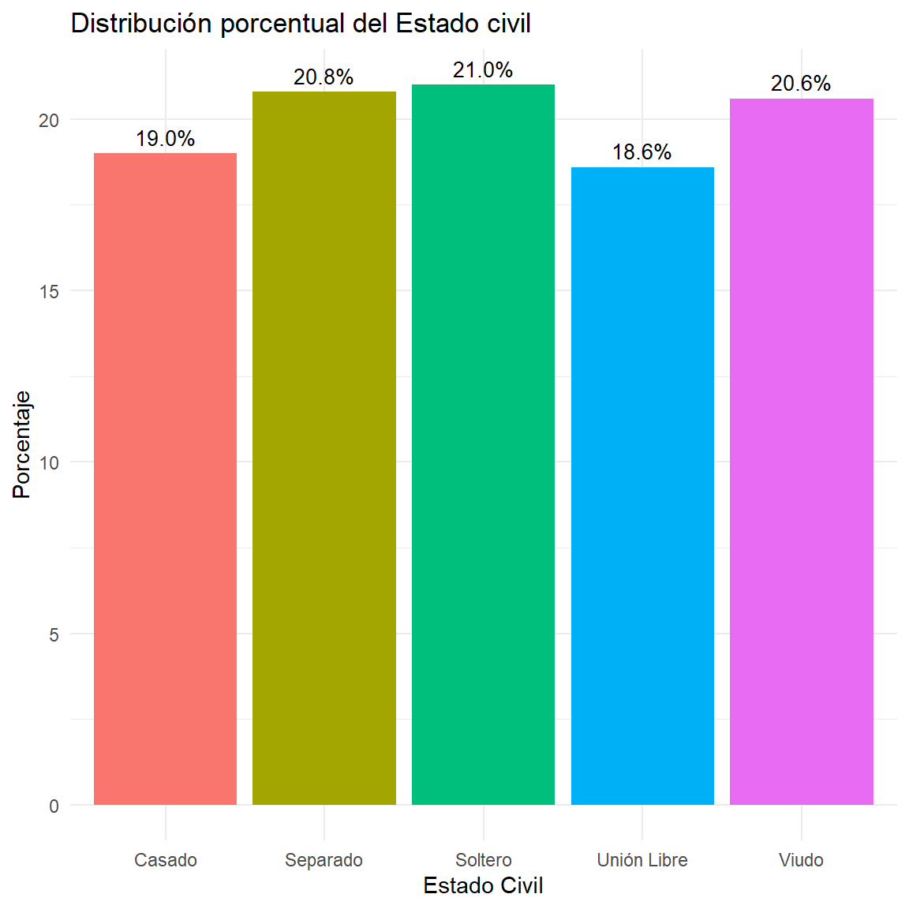
# Cargar las librerías necesarias
library(ggplot2)
library(dplyr)
library(readxl)
# Calcular los porcentajes de cada categoría en la variable ESTADO
estado_counts <- empleo %>%
dplyr::count(ESTADO) %>%
mutate(porcentaje = n / sum(n) * 100)
# Crear el diagrama circular
ggplot(estado_counts, aes(x = "", y = porcentaje, fill = ESTADO)) +
geom_bar(stat = "identity", width = 1) +
coord_polar("y") +
labs(title = "Distribución porcentual del Estado civil") +
theme_minimal() +
theme(axis.title.x = element_blank(),
axis.title.y = element_blank(),
panel.grid = element_blank(),
axis.text.x = element_blank()) +
geom_text(aes(label = sprintf("%.1f%%", porcentaje)),
position = position_stack(vjust = 0.5),
color = "white",
size = 4)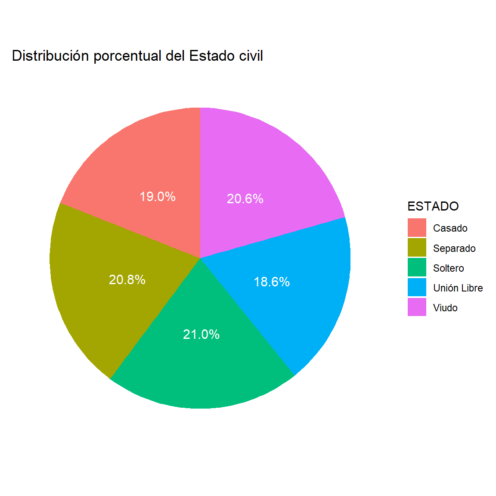
La distribución del personal según la función desempeñada muestra una marcada concentración en el área de Oficina (77%), seguida por Gerencia (17.6%) y Servicios Generales (5.4%). En términos acumulados, Servicios Generales y Oficina concentran el 82.4% del total de trabajadores, alcanzándose el 100% al incluir Gerencia. Estos resultados evidencian una estructura organizacional predominantemente administrativa, con menor participación en niveles directivos y una presencia reducida de funciones de apoyo.
Distribución de frecuencias de los trabajadores según la función desempeñada
# Crear la tabla original
tabla <- tibble(Funcion = empleo$FUNCION) %>%
group_by(Funcion) %>%
summarise(fi = n()) %>%
mutate(
hi = round(fi/sum(fi), 4),
Porcentaje = paste0(hi*100, "%"),
Fi = cumsum(fi),
Hi = cumsum(hi)
)
# Convertir las columnas Fucion, Fi, y Hi a character para evitar conflictos
tabla <- tabla %>% mutate(
Funcion = as.character(Funcion),
Fi = as.character(Fi),
Hi = as.character(Hi)
)
# Añadir la fila de totales, dejando Fi y Hi vacíos
totales <- tibble(
Funcion = "Total",
fi = sum(tabla$fi),
hi = round(sum(tabla$hi), 4),
Porcentaje = paste0(round(sum(tabla$hi) * 100, 2), "%"),
Fi = "", # Puedes dejar en blanco o usar un valor numérico
Hi = "" # Puedes dejar en blanco o usar un valor numérico
)
# Combinar la tabla con los totales
tabla_final <- bind_rows(tabla, totales)
# Mostrar la tabla final con kable
tabla_final %>%
knitr::kable(
col.names = c("Funcion", "fi", "hi", "Porcentaje", "Fi", "Hi"),
align = c("l", "c", "c", "c", "c", "c")
)| Funcion | fi | hi | Porcentaje | Fi | Hi |
|---|---|---|---|---|---|
| Servicios Generales | 27 | 0.054 | 5.4% | 27 | 0.054 |
| Oficina | 385 | 0.770 | 77% | 412 | 0.824 |
| Gerencia | 88 | 0.176 | 17.6% | 500 | 1 |
| Total | 500 | 1.000 | 100% |
# Cargar las librerías necesarias
library(ggplot2)
library(dplyr)
library(readxl)
# Calcular los porcentajes de cada categoría en la variable ESTADO
funcion_counts <- empleo %>%
dplyr::count(FUNCION) %>%
mutate(porcentaje = n / sum(n) * 100)
# Crear el diagrama de barras
ggplot(funcion_counts, aes(x = FUNCION, y = porcentaje, fill = FUNCION)) +
geom_bar(stat = "identity") +
labs(title = "Distribución porcentual de la función desempeñada",
x = "Función",
y = "Porcentaje") +
theme_minimal() +
theme(legend.position = "none") +
geom_text(aes(label = sprintf("%.1f%%", porcentaje)),
vjust = -0.5,
color = "black",
size = 3.5)
La distribución del personal según la función desempeñada muestra una marcada concentración en el área de Oficina (77%), seguida por Gerencia (17.6%) y Servicios Generales (5.4%). En términos acumulados, Servicios Generales y Oficina concentran el 82.4% del total de trabajadores, alcanzándose el 100% al incluir Gerencia. Estos resultados evidencian una estructura organizacional predominantemente administrativa, con menor participación en niveles directivos y una presencia reducida de funciones de apoyo.
Distribución de frecuencias de los trabajadores según la función desempeñada
# Crear la tabla original
tabla <- tibble(Educacion = empleo$EDUCACION) %>%
group_by(Educacion) %>%
summarise(fi = n()) %>%
mutate(
hi = round(fi/sum(fi), 4),
Porcentaje = paste0(hi*100, "%"),
Fi = cumsum(fi),
Hi = cumsum(hi)
)
# Convertir las columnas Personas, Fi, y Hi a character para evitar conflictos
tabla <- tabla %>% mutate(
Educacion = as.character(Educacion),
Fi = as.character(Fi),
Hi = as.character(Hi)
)
# Añadir la fila de totales, dejando Fi y Hi vacíos
totales <- tibble(
Educacion = "Total",
fi = sum(tabla$fi),
hi = round(sum(tabla$hi), 2),
Porcentaje = paste0(round(sum(tabla$hi) * 100, 2), "%"),
Fi = "", # Puedes dejar en blanco o usar un valor numérico
Hi = "" # Puedes dejar en blanco o usar un valor numérico
)
# Combinar la tabla con los totales
tabla_final <- bind_rows(tabla, totales)
# Mostrar la tabla final con kable
tabla_final %>%
knitr::kable(
col.names = c("Educacion", "fi", "hi", "Porcentaje", "Fi", "Hi"),
align = c("l", "r", "r", "r", "r", "r")
)| Educacion | fi | hi | Porcentaje | Fi | Hi |
|---|---|---|---|---|---|
| 8 | 54 | 0.108 | 10.8% | 54 | 0.108 |
| 12 | 201 | 0.402 | 40.2% | 255 | 0.51 |
| 14 | 6 | 0.012 | 1.2% | 261 | 0.522 |
| 15 | 125 | 0.250 | 25% | 386 | 0.772 |
| 16 | 63 | 0.126 | 12.6% | 449 | 0.898 |
| 17 | 11 | 0.022 | 2.2% | 460 | 0.92 |
| 18 | 9 | 0.018 | 1.8% | 469 | 0.938 |
| 19 | 28 | 0.056 | 5.6% | 497 | 0.994 |
| 20 | 2 | 0.004 | 0.4% | 499 | 0.998 |
| 21 | 1 | 0.002 | 0.2% | 500 | 1 |
| Total | 500 | 1.000 | 100% |
# valores de la variable
x <- c(8, 12, 14, 15, 16, 17, 18, 19, 20, 21)
# f.m.p.
fx <- c(0.108, 0.402, 0.012, 0.250, 0.126, 0.022, 0.018, 0.056, 0.004, 0.002)
# Crear un dataframe con los datos
df <- data.frame(x = x, fx = fx)
# Gráfico con ggplot2
ggplot(df, aes(x = x, y = fx)) +
geom_point(shape = 18, color = "red") +
geom_segment(aes(xend = x, yend = 0), size = 1, color = "blue") +
labs(x = "Educación", y = "Porcentaje", title = "Diagrama de bastones") +
theme_minimal() +
geom_text(aes(label = fx), vjust = -0.5)
# Cargar librerías
library(ggplot2)
library(tibble)
# Crear datos
df <- tibble(
x = c(8, 12, 14, 15, 16, 17, 18, 19, 20, 21),
Hi = c(0.108, 0.51, 0.522, 0.772, 0.898, 0.92, 0.938, 0.994, 0.998, 1)
)
# Gráfica de función de distribución acumulada
ggplot(df, aes(x = x, y = Hi)) +
geom_step(color = "#2C3E50", size = 1.2) + # línea escalonada (CDF)
geom_point(color = "#E74C3C", size = 3) + # puntos
scale_x_continuous(breaks = df$x, limits = c(7, 22)) +
scale_y_continuous(limits = c(0, 1)) +
labs(
title = "Función de Distribución Acumulada (FDA)",
x = "Variable",
y = "Frecuencia relativa acumulada (Hi)"
) +
theme_minimal(base_size = 14) +
theme(
plot.title = element_text(face = "bold", hjust = 0.5),
panel.grid.minor = element_blank()
)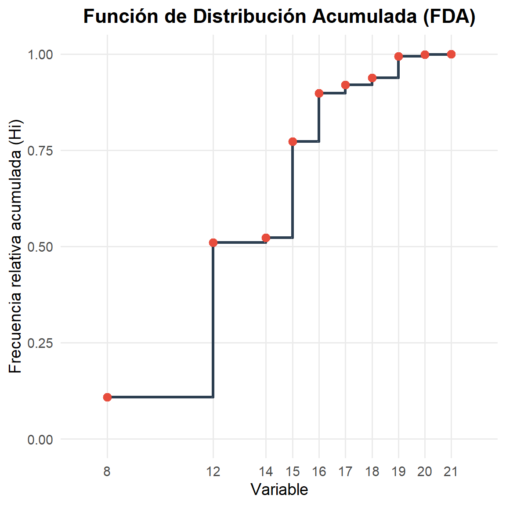
La distribución de los años de educación en los 500 trabajadores evidencia que la mayor concentración se presenta en 12 años de escolaridad (fi = 201; 40.2%), seguido de 15 años (fi = 125; 25%) y 16 años (fi = 63; 12.6%), lo que refleja un predominio de niveles educativos intermedios. En contraste, los niveles más bajos (8 años: 10.8%) y los más altos (20 y 21 años: 0.4% y 0.2%, respectivamente) presentan menor participación. En términos de frecuencias acumuladas, el 51% de los trabajadores no supera los 12 años de educación, mientras que el 77.2% alcanza hasta 15 años y el 89.8% hasta 16 años, completándose el 100% al considerar los 21 años de escolaridad. En conjunto, estos resultados evidencian una estructura educativa predominantemente media, con una baja proporción en los niveles extremos de formación.
Generación de intervalos
Min <- min(empleo$EDAD)
Min[1] 30Max <- max(empleo$EDAD)
Max[1] 72R <- Max-Min
R[1] 42m <- ceiling(1 + 3.322*log10(nrow(empleo)))
m[1] 10A <- ceiling((R/m) * 1) / 1
A[1] 5RC <- A*m
RC[1] 50D <- RC-R
D[1] 8Xmin <- Min-4
Xmin[1] 26Xmax <- Max+4
Xmax[1] 76Distribución de frecuencias de la edad de los trabajadores de la empresa
library(dplyr)
library(kableExtra)
m1 <- (Xmin+(Xmin+A))/2
interv = cut(x = empleo$EDAD, breaks = seq(Xmin, Xmax, by = A), include.lowest = TRUE)
tabla <- tibble(Edad = interv) %>%
group_by(Edad) %>%
summarise(fi = n()) %>%
mutate(hi = fi / sum(fi)) %>%
mutate(
mi = seq(m1, m1+(m-1)*A, by = A) %>% as.character(), # Convertir `mi` a carácter
Fi = cumsum(fi) %>% as.character(), # Convertir `Fi` a carácter
Hi = cumsum(fi / sum(fi)) %>% as.character() # Convertir `Hi` a carácter
) %>%
relocate(Edad, mi, fi)
# Agregar la fila total con casillas en blanco
tabla <- tabla %>%
add_row(Edad = "Total", mi = "", fi = sum(tabla$fi), hi = sum(tabla$hi), Fi = "", Hi = "")
# Generar la tabla con knitr::kable y agregar título
tabla %>%
knitr::kable(
col.names = c("Edad", "mi", "fi", "hi", "Fi", "Hi"),
align = c("l", "r", "r", "r", "r", "r")
) %>%
kableExtra::kable_styling(full_width = FALSE) %>%
kableExtra::add_header_above(c("Distribuciones de frecuencias para la variable Edad" = 6))| Edad | mi | fi | hi | Fi | Hi |
|---|---|---|---|---|---|
| [26,31] | 28.5 | 29 | 0.058 | 29 | 0.058 |
| (31,36] | 33.5 | 127 | 0.254 | 156 | 0.312 |
| (36,41] | 38.5 | 143 | 0.286 | 299 | 0.598 |
| (41,46] | 43.5 | 33 | 0.066 | 332 | 0.664 |
| (46,51] | 48.5 | 33 | 0.066 | 365 | 0.73 |
| (51,56] | 53.5 | 36 | 0.072 | 401 | 0.802 |
| (56,61] | 58.5 | 34 | 0.068 | 435 | 0.87 |
| (61,66] | 63.5 | 32 | 0.064 | 467 | 0.934 |
| (66,71] | 68.5 | 31 | 0.062 | 498 | 0.996 |
| (71,76] | 73.5 | 2 | 0.004 | 500 | 1 |
| Total | 500 | 1.000 |
library(ggplot2)
# Crear el dataframe manualmente (según tu tabla)
edad <- data.frame(
li = c(26, 31, 36, 41, 46, 51, 56, 61, 66, 71),
ls = c(31, 36, 41, 46, 51, 56, 61, 66, 71, 76),
mi = c(28.5, 33.5, 38.5, 43.5, 48.5, 53.5, 58.5, 63.5, 68.5, 73.5),
fi = c(29, 127, 143, 33, 33, 36, 34, 32, 31, 2)
)
# Graficar histograma (usando geom_col porque son datos agrupados)
ggplot(edad, aes(x = mi, y = fi)) +
geom_col(width = 5, fill = "steelblue", color = "black") +
labs(
title = "Histograma de la edad de los trabajadores",
x = "Edad",
y = "Frecuencia"
) +
theme_minimal()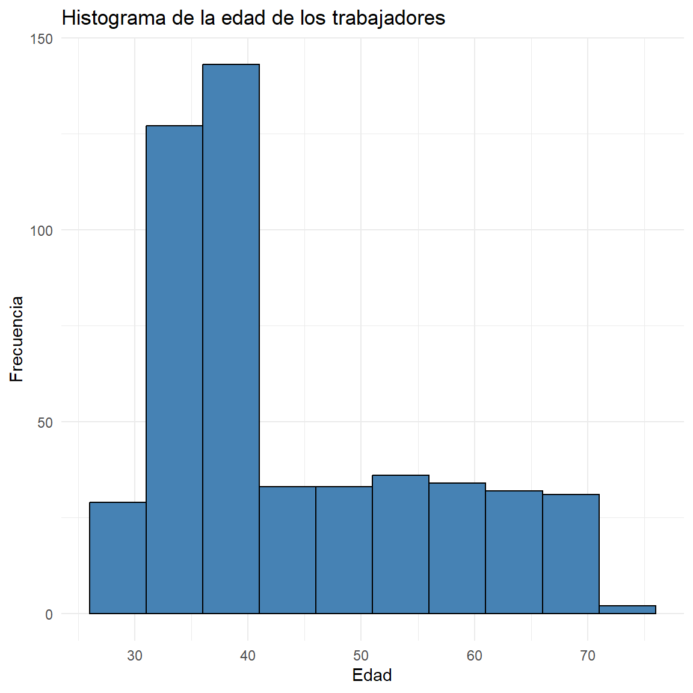
library(ggplot2)
# Crear el dataframe según tu tabla
edad <- data.frame(
li = c(26, 31, 36, 41, 46, 51, 56, 61, 66, 71),
ls = c(31, 36, 41, 46, 51, 56, 61, 66, 71, 76),
Hi = c(0.058, 0.312, 0.598, 0.664, 0.73, 0.802, 0.87, 0.934, 0.996, 1.000)
)
# Graficar la ojiva
ggplot(edad, aes(x = ls, y = Hi)) +
geom_line(color = "blue", size = 1) +
geom_point(color = "red", size = 2) +
labs(
title = "Ojiva de la edad de los trabajadores",
x = "Edad (límite superior del intervalo)",
y = "Frecuencia acumulada relativa"
) +
scale_y_continuous(labels = scales::percent) +
theme_minimal()
library(ggplot2)
library(dplyr)
# Datos agrupados
edad <- data.frame(
mi = c(28.5, 33.5, 38.5, 43.5, 48.5, 53.5, 58.5, 63.5, 68.5, 73.5),
fi = c(29, 127, 143, 33, 33, 36, 34, 32, 31, 2)
)
# Expandir los datos (aproximación)
edad_expandida <- edad %>%
slice(rep(1:n(), fi))
# Gráfico de densidad
ggplot(edad_expandida, aes(x = mi)) +
geom_density(fill = "steelblue", alpha = 0.5, size = 1) +
labs(
title = "Densidad de la edad de los trabajadores",
x = "Edad",
y = "Densidad"
) +
theme_minimal()
La distribución de la edad de los 500 trabajadores, organizada en intervalos de amplitud constante, evidencia una mayor concentración en los rangos intermedios. En términos de frecuencias absolutas (fi), el intervalo 36–41 años presenta la mayor proporción de trabajadores (fi = 143; hi = 0.286), seguido del intervalo 31–36 años (fi = 127; hi = 0.254), lo que indica que más de la mitad del personal se concentra entre los 31 y 41 años de edad.
Por su parte, los intervalos extremos presentan menor participación: el grupo de 71–76 años registra la menor frecuencia (fi = 2; hi = 0.004), mientras que los intervalos iniciales y finales muestran proporciones reducidas en comparación con los rangos centrales.
Desde la perspectiva de las frecuencias acumuladas (Fi y Hi), se observa que el 31.2% de los trabajadores no supera los 36 años, mientras que el 59.8% se concentra hasta los 41 años, evidenciando que más de la mitad del personal se ubica en edades medias. Asimismo, el 80.2% no supera los 56 años y el 93.4% se encuentra por debajo de los 66 años, alcanzándose el 100% al considerar el último intervalo (71–76 años).
En conjunto, estos resultados muestran una distribución unimodal con concentración en edades intermedias, lo que sugiere una estructura etaria predominantemente adulta, con baja representación de trabajadores en los extremos inferior y superior de edad.
# Cargar las bibliotecas necesarias
library(dplyr)
library(readxl)
library(kableExtra)
# Crear una tabla de contingencia con EDUCACION y ESTRATO
table_FUNCION_ESTRATO <- table(empleo$FUNCION, empleo$ESTRATO)
# Convertir la tabla a un data frame para facilitar el manejo de datos
table_df <- as.data.frame.matrix(table_FUNCION_ESTRATO)
# Calcular los totales de frecuencia absoluta (Total)
table_df$Total <- rowSums(table_df) # Totales por fila
total_fi <- sum(table_df$Total) # Total general
# Añadir una fila de totales al final de la tabla
table_df <- rbind(table_df, Total = c(colSums(table_FUNCION_ESTRATO), total_fi))
# Mostrar la tabla con kableExtra, aplicando color solo a la fila de Totales
table_df %>%
kable("html", caption = "Tabla de Frecuencias absolutas de FUNCIÓN vs ESTRATO de los trabajadores") %>%
kable_styling(bootstrap_options = c("striped", "hover", "condensed", "responsive"),
full_width = F, position = "center") %>%
row_spec(nrow(table_df), bold = T, color = "white", background = "darkblue") # Resaltar solo la fila de Totales| Bajo | Medio | Alto | Total | |
|---|---|---|---|---|
| Servicios Generales | 5 | 11 | 11 | 27 |
| Oficina | 121 | 149 | 115 | 385 |
| Gerencia | 34 | 24 | 30 | 88 |
| Total | 160 | 184 | 156 | 500 |
# Cargar las bibliotecas necesarias
library(dplyr)
library(readxl)
library(kableExtra)
# Crear una tabla de contingencia con FUNCION y ESTRATO
table_FUNCION_ESTRATO <- table(empleo$FUNCION, empleo$ESTRATO)
# Convertir la tabla a un data frame para facilitar el manejo de datos
table_df <- as.data.frame.matrix(table_FUNCION_ESTRATO)
# Calcular el total general para las frecuencias relativas
total_fi <- sum(table_df) # Total general para todas las celdas
# Calcular las frecuencias relativas
table_df <- table_df / total_fi # Dividir cada valor por el total general para obtener la frecuencia relativa
# Calcular los totales de frecuencia relativa por fila y columna
table_df$Total <- rowSums(table_df) # Totales por fila (frecuencias relativas)
total_column <- colSums(table_df) # Totales por columna (frecuencias relativas)
# Añadir una fila de totales al final de la tabla
table_df <- rbind(table_df, Total = total_column)
# Mostrar la tabla con kableExtra, aplicando color solo a la fila de Totales
table_df %>%
kable("html", caption = "Tabla de Frecuencias Relativas de FUNCION vs ESTRATO de los trabajadores") %>%
kable_styling(bootstrap_options = c("striped", "hover", "condensed", "responsive"),
full_width = F, position = "center") %>%
row_spec(nrow(table_df), bold = T, color = "white", background = "darkblue") # Resaltar solo la fila de Totales| Bajo | Medio | Alto | Total | |
|---|---|---|---|---|
| Servicios Generales | 0.010 | 0.022 | 0.022 | 0.054 |
| Oficina | 0.242 | 0.298 | 0.230 | 0.770 |
| Gerencia | 0.068 | 0.048 | 0.060 | 0.176 |
| Total | 0.320 | 0.368 | 0.312 | 1.000 |
# Cargar las librerías necesarias
library(ggplot2)
library(dplyr)
library(readxl)
# Calcular los porcentajes de cada categoría de ESTRATO dentro de cada ESTADO
data_porcentaje <- empleo %>%
count(ESTADO, ESTRATO) %>%
group_by(ESTADO) %>%
mutate(porcentaje = n / sum(n) * 100)
# Crear el diagrama de barras conjuntas con porcentajes
ggplot(data_porcentaje, aes(x = ESTADO, y = porcentaje, fill = ESTRATO)) +
geom_bar(stat = "identity", position = "dodge") + # Usar "stack" si deseas barras apiladas
labs(title = "Distribución porcentual de Estrato por Estado Civil",
x = "Estado Civil",
y = "Porcentaje",
fill = "Estrato") +
theme_minimal() +
geom_text(aes(label = sprintf("%.1f%%", porcentaje)),
position = position_dodge(0.9),
vjust = -0.5,
size = 3)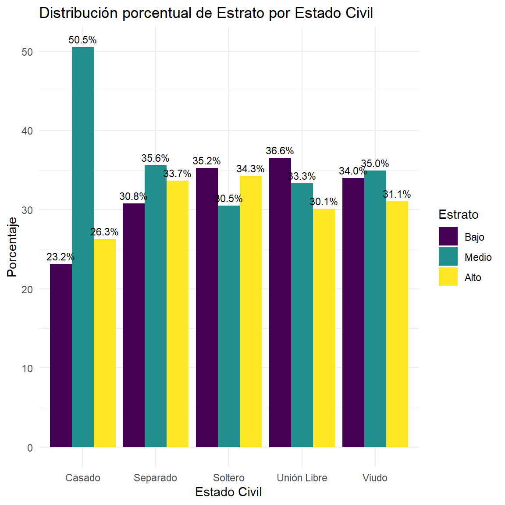
# Cargar las librerías necesarias
library(ggplot2)
library(dplyr)
library(readxl)
# Calcular los porcentajes de cada categoría de ESTRATO dentro de cada ESTADO
data_porcentaje <- empleo %>%
count(ESTADO, ESTRATO) %>%
group_by(ESTADO) %>%
mutate(porcentaje = n / sum(n) * 100)
# Crear el diagrama de barras apiladas con porcentajes
ggplot(data_porcentaje, aes(x = ESTADO, y = porcentaje, fill = ESTRATO)) +
geom_bar(stat = "identity", position = "stack") +
labs(title = "Distribución porcentual de Estrato por Estado Civil",
x = "Estado Civil",
y = "Porcentaje",
fill = "Estrato") +
theme_minimal() +
geom_text(aes(label = sprintf("%.1f%%", porcentaje)),
position = position_stack(vjust = 0.5),
color = "white",
size = 3)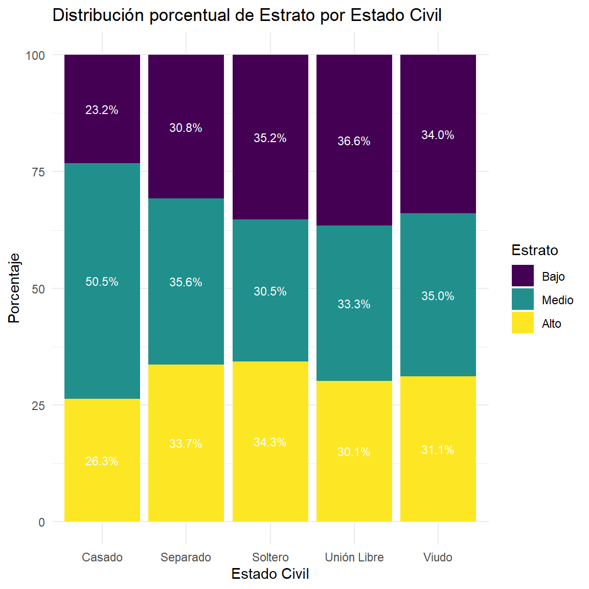
# Cargar las librerías necesarias
library(ggplot2)
library(dplyr)
library(readxl)
# Calcular los porcentajes de cada categoría de ESTRATO dentro de cada ESTADO
data_porcentaje <- empleo %>%
count(ESTADO, ESTRATO) %>%
group_by(ESTADO) %>%
mutate(porcentaje = n / sum(n) * 100)
# Crear el diagrama de barras apiladas en forma horizontal con porcentajes
ggplot(data_porcentaje, aes(x = ESTADO, y = porcentaje, fill = ESTRATO)) +
geom_bar(stat = "identity", position = "stack") +
labs(title = "Distribución porcentual de Estrato por Estado Civil",
x = "Estado Civil",
y = "Porcentaje",
fill = "Estrato") +
theme_minimal() +
geom_text(aes(label = sprintf("%.1f%%", porcentaje)),
position = position_stack(vjust = 0.5),
color = "white",
size = 3) +
coord_flip()
La distribución conjunta entre la función desempeñada y el estrato socioeconómico de los trabajadores evidencia una clara concentración del personal en el área de Oficina, la cual representa el 77% del total. Dentro de esta categoría, se observa una mayor proporción en el estrato medio (29.8%), seguido del estrato bajo (24.2%) y alto (23.0%), lo que sugiere una composición relativamente equilibrada, aunque con predominio del nivel medio.
Por su parte, Gerencia presenta una menor participación global (17.6%), con mayor presencia en el estrato bajo (6.8%) y alto (6.0%), mientras que el estrato medio (4.8%) es menos representativo. En contraste, Servicios Generales constituye la menor proporción (5.4%), distribuida de manera similar entre los estratos medio y alto (2.2% cada uno) y con menor participación en el estrato bajo (1.0%).
En términos generales, los totales por estrato indican que el estrato medio concentra la mayor proporción de trabajadores (36.8%), seguido del estrato alto (31.2%) y bajo (32.0%). Estos resultados sugieren que la estructura organizacional está dominada por funciones de oficina con predominio del estrato medio, mientras que las demás funciones presentan una menor participación relativa en todos los niveles socioeconómicos.
library(readxl)
educacion <- read_excel("educacion.xlsx")activar alguna filas del dataset
head(educacion,4)# A tibble: 4 × 10
ID Genero Nivel_Educativo Estrato Cursos Horas Promedio `Asistencia (%)`
<dbl> <chr> <chr> <chr> <dbl> <dbl> <dbl> <dbl>
1 1 Femenino Universidad Alto 5 26.8 4.37 51.3
2 2 Femenino Universidad Bajo 4 9.05 4.9 51.1
3 3 Femenino Secundaria Medio 8 28.2 1.26 92.4
4 4 Femenino Universidad Bajo 6 17.9 1.96 64.8
# ℹ 2 more variables: Tecnologia <chr>, Satisfaccion <chr>estructura de las variables
glimpse(educacion)Rows: 300
Columns: 10
$ ID <dbl> 1, 2, 3, 4, 5, 6, 7, 8, 9, 10, 11, 12, 13, 14, 15, 16…
$ Genero <chr> "Femenino", "Femenino", "Femenino", "Femenino", "Masc…
$ Nivel_Educativo <chr> "Universidad", "Universidad", "Secundaria", "Universi…
$ Estrato <chr> "Alto", "Bajo", "Medio", "Bajo", "Alto", "Bajo", "Baj…
$ Cursos <dbl> 5, 4, 8, 6, 4, 2, 2, 6, 8, 4, 6, 2, 2, 6, 8, 5, 1, 8,…
$ Horas <dbl> 26.82, 9.05, 28.19, 17.86, 15.87, 27.63, 3.31, 14.81,…
$ Promedio <dbl> 4.37, 4.90, 1.26, 1.96, 3.60, 4.58, 1.47, 3.89, 4.65,…
$ `Asistencia (%)` <dbl> 51.29, 51.06, 92.35, 64.85, 57.01, 76.11, 84.15, 93.2…
$ Tecnologia <chr> "Bajo", "Bajo", "Bajo", "Medio", "Alto", "Medio", "Ba…
$ Satisfaccion <chr> "Muy alta", "Media", "Muy alta", "Muy alta", "Muy baj…número de variables
educacion %>% names %>% length[1] 10Nombre de las variables
names(educacion) [1] "ID" "Genero" "Nivel_Educativo" "Estrato"
[5] "Cursos" "Horas" "Promedio" "Asistencia (%)"
[9] "Tecnologia" "Satisfaccion" transformar variables
educacion <- educacion %>%
mutate(
Nivel_Educativo = parse_factor(
as.character(Nivel_Educativo),
levels = c("Primaria", "Secundaria", "Universidad"),
ordered = TRUE
),
Estrato = parse_factor(
as.character(Estrato),
levels = c("Bajo", "Medio", "Alto"),
ordered = TRUE
),
Tecnologia = parse_factor(
as.character(Tecnologia),
levels = c("Bajo", "Medio", "Alto"),
ordered = TRUE
),
Satisfaccion = parse_factor(
as.character(Satisfaccion),
levels = c("Muy baja", "Baja", "Media", "Alta", "Muy alta"),
ordered = TRUE
)
)Nueva estructura de las variables
glimpse(educacion)Rows: 300
Columns: 10
$ ID <dbl> 1, 2, 3, 4, 5, 6, 7, 8, 9, 10, 11, 12, 13, 14, 15, 16…
$ Genero <chr> "Femenino", "Femenino", "Femenino", "Femenino", "Masc…
$ Nivel_Educativo <ord> Universidad, Universidad, Secundaria, Universidad, Un…
$ Estrato <ord> Alto, Bajo, Medio, Bajo, Alto, Bajo, Bajo, Medio, Med…
$ Cursos <dbl> 5, 4, 8, 6, 4, 2, 2, 6, 8, 4, 6, 2, 2, 6, 8, 5, 1, 8,…
$ Horas <dbl> 26.82, 9.05, 28.19, 17.86, 15.87, 27.63, 3.31, 14.81,…
$ Promedio <dbl> 4.37, 4.90, 1.26, 1.96, 3.60, 4.58, 1.47, 3.89, 4.65,…
$ `Asistencia (%)` <dbl> 51.29, 51.06, 92.35, 64.85, 57.01, 76.11, 84.15, 93.2…
$ Tecnologia <ord> Bajo, Bajo, Bajo, Medio, Alto, Medio, Bajo, Medio, Al…
$ Satisfaccion <ord> Muy alta, Media, Muy alta, Muy alta, Muy baja, Alta, …# Crear la tabla original
tabla <- tibble(Genero = educacion$Genero) %>%
group_by(Genero) %>%
summarise(fi = n()) %>%
mutate(
hi = round(fi/sum(fi), 4),
Porcentaje = paste0(hi*100, "%"),)
# Convertir las columnas a character para evitar conflictos
tabla <- tabla %>% mutate(
Genero = as.character(Genero))
# Añadir la fila de totales
totales <- tibble(
Genero = "Total",
fi = sum(tabla$fi),
hi = round(sum(tabla$hi), 4),
Porcentaje = paste0(round(sum(tabla$hi) * 100, 2), "%"))
# Combinar la tabla con los totales
tabla_final <- bind_rows(tabla, totales)
# Mostrar la tabla final con kable
tabla_final %>%
knitr::kable(
col.names = c("Genero", "fi", "hi", "Porcentaje"),
align = c("l", "c", "c", "c"))| Genero | fi | hi | Porcentaje |
|---|---|---|---|
| Femenino | 161 | 0.5367 | 53.67% |
| Masculino | 139 | 0.4633 | 46.33% |
| Total | 300 | 1.0000 | 100% |
# Cargar las librerías necesarias
library(ggplot2)
library(dplyr)
library(readxl)
# Calcular los porcentajes de cada categoría en la variable ESTADO
estado_counts <- educacion %>%
dplyr::count(Genero) %>%
mutate(porcentaje = n / sum(n) * 100)
# Crear el diagrama de barras
ggplot(estado_counts, aes(x = Genero, y = porcentaje, fill = Genero)) +
geom_bar(stat = "identity") +
labs(title = "Distribución porcentual del genero",
x = "Genero",
y = "Porcentaje") +
theme_minimal() +
theme(legend.position = "none") +
geom_text(aes(label = sprintf("%.1f%%", porcentaje)),
vjust = -0.5,
color = "black",
size = 3.5)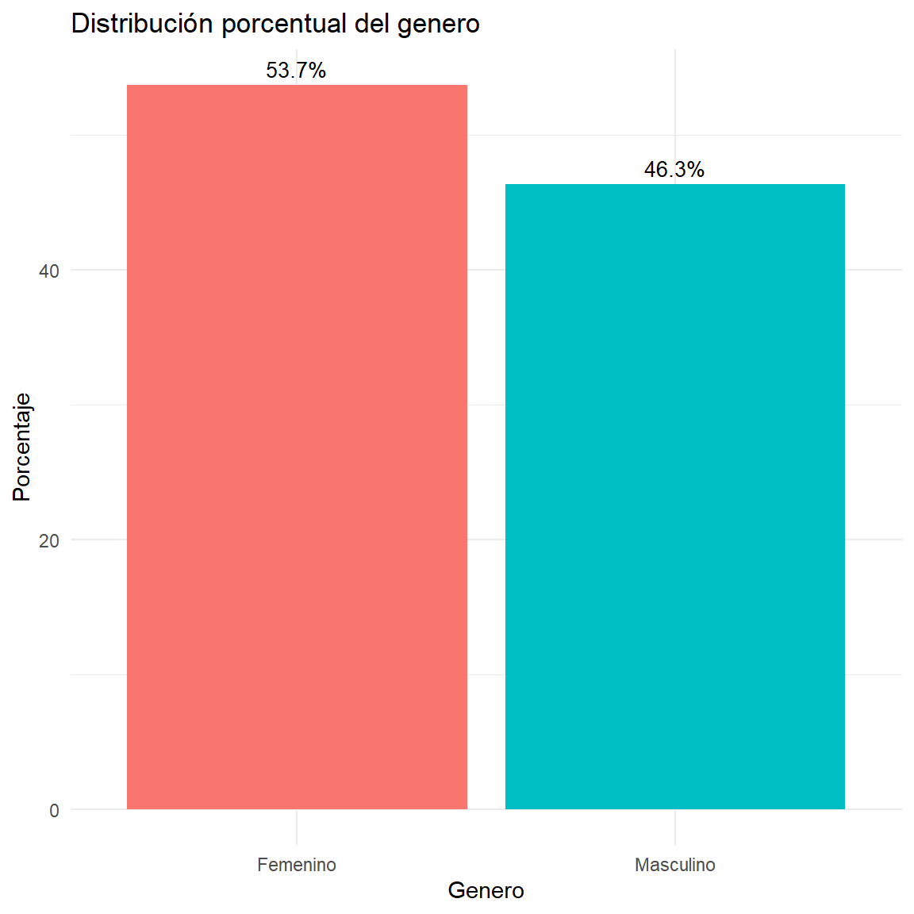
# Cargar las librerías necesarias
library(ggplot2)
library(dplyr)
library(readxl)
# Calcular los porcentajes de cada categoría en la variable ESTADO
estado_counts <- educacion %>%
dplyr::count(Genero) %>%
mutate(porcentaje = n / sum(n) * 100)
# Crear el diagrama circular
ggplot(estado_counts, aes(x = "", y = porcentaje, fill = Genero)) +
geom_bar(stat = "identity", width = 1) +
coord_polar("y") +
labs(title = "Distribución porcentual del Genero") +
theme_minimal() +
theme(axis.title.x = element_blank(),
axis.title.y = element_blank(),
panel.grid = element_blank(),
axis.text.x = element_blank()) +
geom_text(aes(label = sprintf("%.1f%%", porcentaje)),
position = position_stack(vjust = 0.5),
color = "white",
size = 4)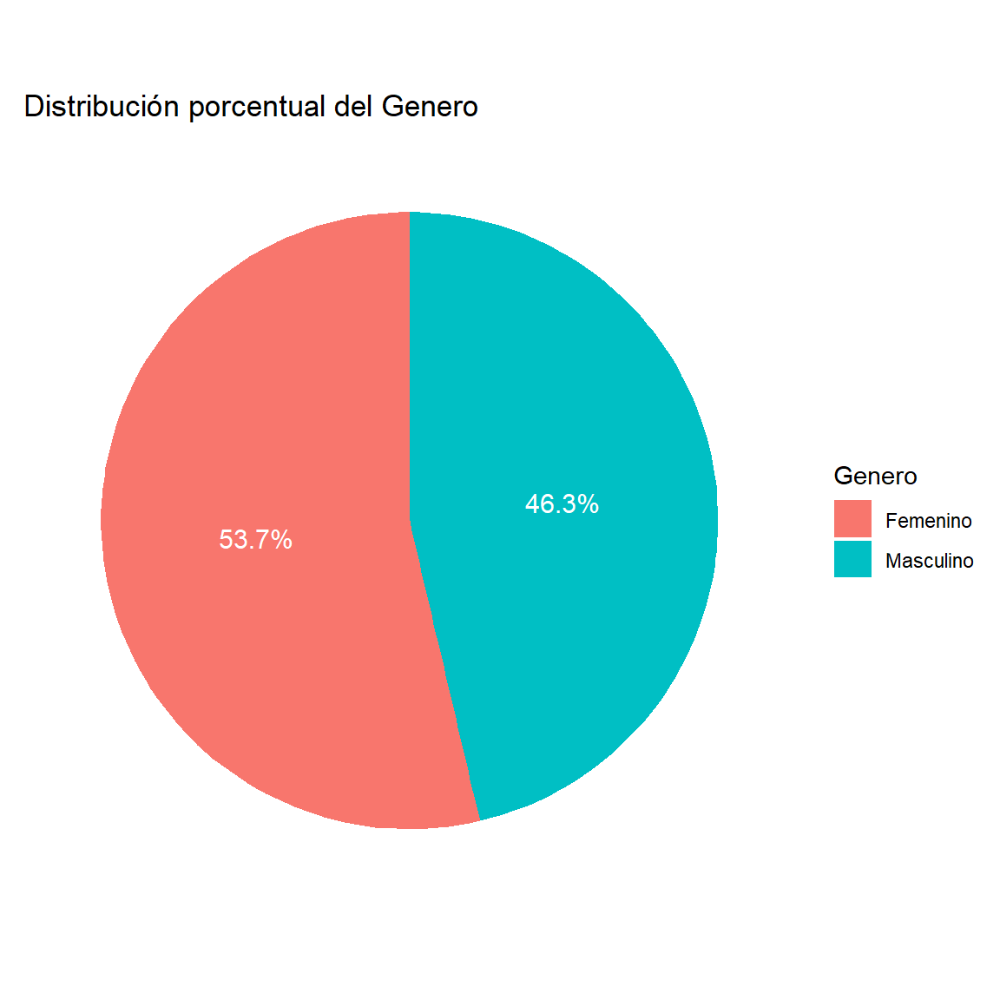
De un total de 300 estudiantes, se observa que 161 corresponden al género femenino, lo que equivale al 53.67% de la población, mientras que 139 pertenecen al género masculino, representando el 46.33%.
Desde el punto de vista descriptivo, la distribución evidencia una mayor participación del género femenino, con una diferencia de 22 estudiantes respecto al género masculino, lo que se traduce en una brecha de 7.34 puntos porcentuales.
# Crear la tabla original
tabla <- tibble(Nivel_Educativo = educacion$Nivel_Educativo) %>%
group_by(Nivel_Educativo) %>%
summarise(fi = n()) %>%
mutate(
hi = round(fi/sum(fi), 4),
Porcentaje = paste0(hi*100, "%"),
Fi = cumsum(fi),
Hi = cumsum(hi)
)
# Convertir las columnas Fucion, Fi, y Hi a character para evitar conflictos
tabla <- tabla %>% mutate(
Nivel_Educativo = as.character(Nivel_Educativo),
Fi = as.character(Fi),
Hi = as.character(Hi)
)
# Añadir la fila de totales, dejando Fi y Hi vacíos
totales <- tibble(
Nivel_Educativo = "Total",
fi = sum(tabla$fi),
hi = round(sum(tabla$hi), 4),
Porcentaje = paste0(round(sum(tabla$hi) * 100, 2), "%"),
Fi = "", # Puedes dejar en blanco o usar un valor numérico
Hi = "" # Puedes dejar en blanco o usar un valor numérico
)
# Combinar la tabla con los totales
tabla_final <- bind_rows(tabla, totales)
# Mostrar la tabla final con kable
tabla_final %>%
knitr::kable(
col.names = c("Nivel_Educativo", "fi", "hi", "Porcentaje", "Fi", "Hi"),
align = c("l", "c", "c", "c", "c", "c")
)| Nivel_Educativo | fi | hi | Porcentaje | Fi | Hi |
|---|---|---|---|---|---|
| Primaria | 93 | 0.31 | 31% | 93 | 0.31 |
| Secundaria | 105 | 0.35 | 35% | 198 | 0.66 |
| Universidad | 102 | 0.34 | 34% | 300 | 1 |
| Total | 300 | 1.00 | 100% |
# Cargar las librerías necesarias
library(ggplot2)
library(dplyr)
library(readxl)
# Calcular los porcentajes de cada categoría en la variable ESTADO
funcion_counts <- educacion %>%
dplyr::count(Nivel_Educativo) %>%
mutate(porcentaje = n / sum(n) * 100)
# Crear el diagrama de barras
ggplot(funcion_counts, aes(x = Nivel_Educativo, y = porcentaje, fill = Nivel_Educativo)) +
geom_bar(stat = "identity") +
labs(title = "Distribución porcentual del Nivel educativo",
x = "Nivel_Educativo",
y = "Porcentaje") +
theme_minimal() +
theme(legend.position = "none") +
geom_text(aes(label = sprintf("%.1f%%", porcentaje)),
vjust = -0.5,
color = "black",
size = 3.5)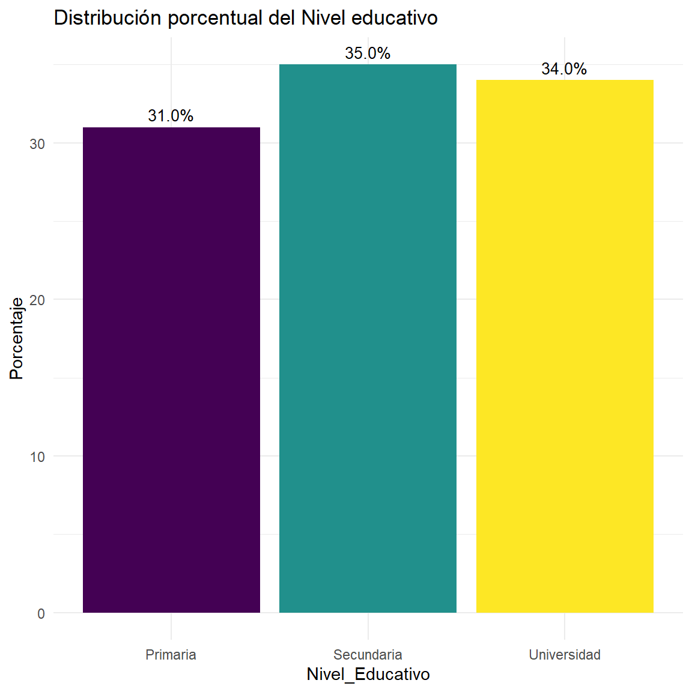
Se evidencia que el nivel de Secundaria presenta la mayor proporción de estudiantes, con un 35.0%, seguido muy de cerca por el nivel de Universidad con un 34.0%, mientras que Primaria registra la menor participación con un 31.0%.
La diferencia entre el valor más alto y el más bajo es de apenas 4 puntos porcentuales, lo que indica una distribución bastante homogénea entre los distintos niveles educativos.
# Crear la tabla original
tabla <- tibble(Estrato = educacion$Estrato) %>%
group_by(Estrato) %>%
summarise(fi = n()) %>%
mutate(
hi = round(fi/sum(fi), 4),
Porcentaje = paste0(hi*100, "%"),
Fi = cumsum(fi),
Hi = cumsum(hi)
)
# Convertir las columnas Fucion, Fi, y Hi a character para evitar conflictos
tabla <- tabla %>% mutate(
Estrato = as.character(Estrato),
Fi = as.character(Fi),
Hi = as.character(Hi)
)
# Añadir la fila de totales, dejando Fi y Hi vacíos
totales <- tibble(
Estrato = "Total",
fi = sum(tabla$fi),
hi = round(sum(tabla$hi), 4),
Porcentaje = paste0(round(sum(tabla$hi) * 100, 2), "%"),
Fi = "", # Puedes dejar en blanco o usar un valor numérico
Hi = "" # Puedes dejar en blanco o usar un valor numérico
)
# Combinar la tabla con los totales
tabla_final <- bind_rows(tabla, totales)
# Mostrar la tabla final con kable
tabla_final %>%
knitr::kable(
col.names = c("Estrato", "fi", "hi", "Porcentaje", "Fi", "Hi"),
align = c("l", "c", "c", "c", "c", "c")
)| Estrato | fi | hi | Porcentaje | Fi | Hi |
|---|---|---|---|---|---|
| Bajo | 97 | 0.3233 | 32.33% | 97 | 0.3233 |
| Medio | 102 | 0.3400 | 34% | 199 | 0.6633 |
| Alto | 101 | 0.3367 | 33.67% | 300 | 1 |
| Total | 300 | 1.0000 | 100% |
# Cargar las librerías necesarias
library(ggplot2)
library(dplyr)
library(readxl)
# Calcular los porcentajes de cada categoría en la variable ESTADO
funcion_counts <- educacion %>%
dplyr::count(Estrato) %>%
mutate(porcentaje = n / sum(n) * 100)
# Crear el diagrama de barras
ggplot(funcion_counts, aes(x = Estrato, y = porcentaje, fill = Estrato)) +
geom_bar(stat = "identity") +
labs(title = "Distribución porcentual del Estrato",
x = "Estrato",
y = "Porcentaje") +
theme_minimal() +
theme(legend.position = "none") +
geom_text(aes(label = sprintf("%.1f%%", porcentaje)),
vjust = -0.5,
color = "black",
size = 3.5)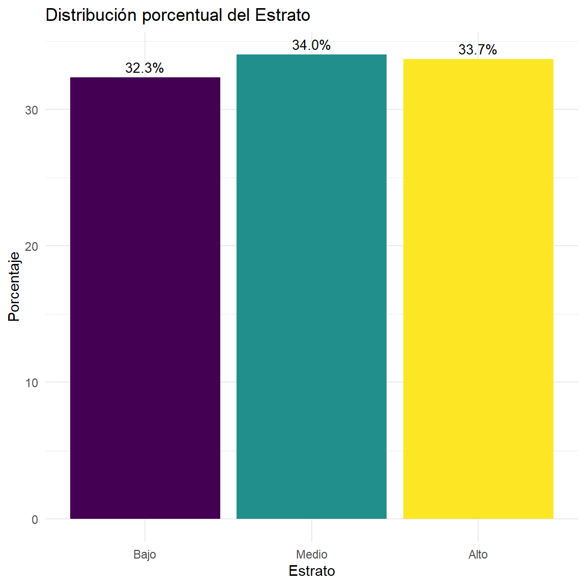
Se observa que el estrato Medio presenta la mayor proporción con un 34.0%, seguido muy de cerca por el estrato Alto con 33.7%, mientras que el estrato Bajo registra el menor porcentaje con 32.3%.
La diferencia entre el valor máximo y el mínimo es de apenas 1.7 puntos porcentuales, lo que evidencia una distribución altamente homogénea entre los distintos estratos.
# Crear la tabla original
tabla <- tibble(Tecnologia = educacion$Tecnologia) %>%
group_by(Tecnologia) %>%
summarise(fi = n()) %>%
mutate(
hi = round(fi/sum(fi), 4),
Porcentaje = paste0(hi*100, "%"),
Fi = cumsum(fi),
Hi = cumsum(hi)
)
# Convertir las columnas Fucion, Fi, y Hi a character para evitar conflictos
tabla <- tabla %>% mutate(
Tecnologia = as.character(Tecnologia),
Fi = as.character(Fi),
Hi = as.character(Hi)
)
# Añadir la fila de totales, dejando Fi y Hi vacíos
totales <- tibble(
Tecnologia = "Total",
fi = sum(tabla$fi),
hi = round(sum(tabla$hi), 4),
Porcentaje = paste0(round(sum(tabla$hi) * 100, 2), "%"),
Fi = "", # Puedes dejar en blanco o usar un valor numérico
Hi = "" # Puedes dejar en blanco o usar un valor numérico
)
# Combinar la tabla con los totales
tabla_final <- bind_rows(tabla, totales)
# Mostrar la tabla final con kable
tabla_final %>%
knitr::kable(
col.names = c("Tecnologia", "fi", "hi", "Porcentaje", "Fi", "Hi"),
align = c("l", "c", "c", "c", "c", "c")
)| Tecnologia | fi | hi | Porcentaje | Fi | Hi |
|---|---|---|---|---|---|
| Bajo | 112 | 0.3733 | 37.33% | 112 | 0.3733 |
| Medio | 108 | 0.3600 | 36% | 220 | 0.7333 |
| Alto | 80 | 0.2667 | 26.67% | 300 | 1 |
| Total | 300 | 1.0000 | 100% |
# Cargar las librerías necesarias
library(ggplot2)
library(dplyr)
library(readxl)
# Calcular los porcentajes de cada categoría en la variable ESTADO
funcion_counts <- educacion %>%
dplyr::count(Tecnologia) %>%
mutate(porcentaje = n / sum(n) * 100)
# Crear el diagrama de barras
ggplot(funcion_counts, aes(x = Tecnologia, y = porcentaje, fill = Tecnologia)) +
geom_bar(stat = "identity") +
labs(title = "Distribución porcentual del conocimiento tecnologico",
x = "conocimiento tecnologico",
y = "Porcentaje") +
theme_minimal() +
theme(legend.position = "none") +
geom_text(aes(label = sprintf("%.1f%%", porcentaje)),
vjust = -0.5,
color = "black",
size = 3.5)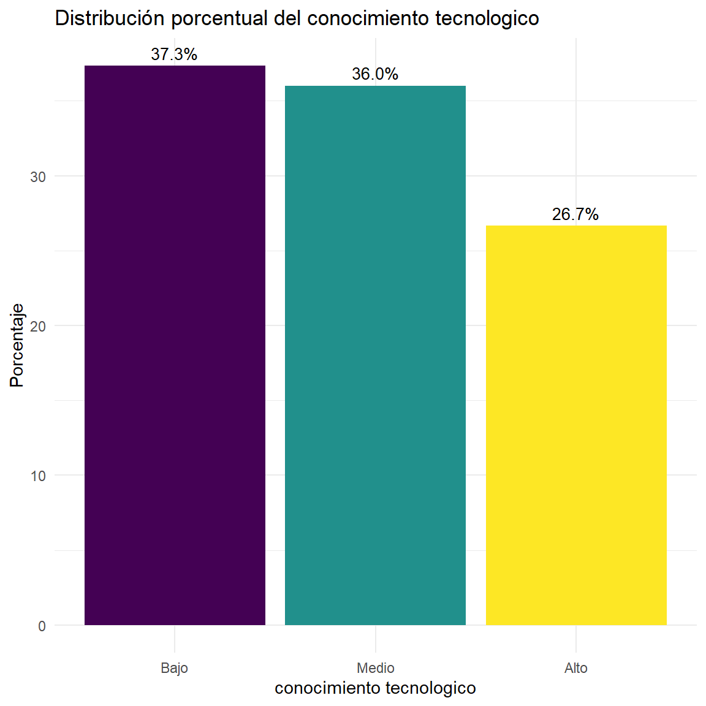
Se observa que el nivel Bajo concentra la mayor proporción con 37.3%, seguido muy de cerca por el nivel Medio con 36.0%, mientras que el nivel Alto presenta una menor participación con 26.7%.
La diferencia entre el nivel más alto (Bajo) y el más bajo (Alto) es de 10.6 puntos porcentuales, lo que indica una distribución no uniforme, con menor presencia de estudiantes con alto dominio tecnológico.
# Crear la tabla original
tabla <- tibble(Satisfaccion = educacion$Satisfaccion) %>%
group_by(Satisfaccion) %>%
summarise(fi = n()) %>%
mutate(
hi = round(fi/sum(fi), 4),
Porcentaje = paste0(hi*100, "%"),
Fi = cumsum(fi),
Hi = cumsum(hi)
)
# Convertir las columnas Fucion, Fi, y Hi a character para evitar conflictos
tabla <- tabla %>% mutate(
Satisfaccion = as.character(Satisfaccion),
Fi = as.character(Fi),
Hi = as.character(Hi)
)
# Añadir la fila de totales, dejando Fi y Hi vacíos
totales <- tibble(
Satisfaccion = "Total",
fi = sum(tabla$fi),
hi = round(sum(tabla$hi), 4),
Porcentaje = paste0(round(sum(tabla$hi) * 100, 2), "%"),
Fi = "", # Puedes dejar en blanco o usar un valor numérico
Hi = "" # Puedes dejar en blanco o usar un valor numérico
)
# Combinar la tabla con los totales
tabla_final <- bind_rows(tabla, totales)
# Mostrar la tabla final con kable
tabla_final %>%
knitr::kable(
col.names = c("Satisfaccion", "fi", "hi", "Porcentaje", "Fi", "Hi"),
align = c("l", "c", "c", "c", "c", "c")
)| Satisfaccion | fi | hi | Porcentaje | Fi | Hi |
|---|---|---|---|---|---|
| Muy baja | 48 | 0.1600 | 16% | 48 | 0.16 |
| Baja | 65 | 0.2167 | 21.67% | 113 | 0.3767 |
| Media | 55 | 0.1833 | 18.33% | 168 | 0.56 |
| Alta | 65 | 0.2167 | 21.67% | 233 | 0.7767 |
| Muy alta | 67 | 0.2233 | 22.33% | 300 | 1 |
| Total | 300 | 1.0000 | 100% |
# Cargar las librerías necesarias
library(ggplot2)
library(dplyr)
library(readxl)
# Calcular los porcentajes de cada categoría en la variable ESTADO
funcion_counts <- educacion %>%
dplyr::count(Satisfaccion) %>%
mutate(porcentaje = n / sum(n) * 100)
# Crear el diagrama de barras
ggplot(funcion_counts, aes(x = Satisfaccion, y = porcentaje, fill = Satisfaccion)) +
geom_bar(stat = "identity") +
labs(title = "Distribución porcentual de la Satisfaccion",
x = "Satisfaccion",
y = "Porcentaje") +
theme_minimal() +
theme(legend.position = "none") +
geom_text(aes(label = sprintf("%.1f%%", porcentaje)),
vjust = -0.5,
color = "black",
size = 3.5)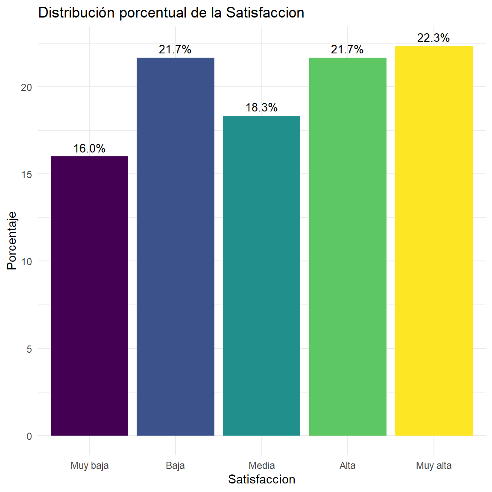
Estás dividido: El 44% de la gente está feliz (Alta/Muy Alta), pero el 37.7% está descontenta (Baja/Muy Baja). Es casi un empate entre los que te quieren y los que no.
Gana la excelencia por poco: El grupo más grande de todos es el de “Muy Alta” (22.3%), lo cual es bueno, pero tienes pegado a los grupos de “Alta” y “Baja” con un 21.7% cada uno.
No hay términos medios: La categoría “Media” (18.3%) es de las más bajas. Esto significa que tu servicio no es “equis” o “normal”; o das una experiencia increíble o das una muy mala.
# Crear la tabla original
tabla <- tibble(Cursos = educacion$Cursos) %>%
group_by(Cursos) %>%
summarise(fi = n()) %>%
mutate(
hi = round(fi/sum(fi), 4),
Porcentaje = paste0(hi*100, "%"),
Fi = cumsum(fi),
Hi = cumsum(hi)
)
# Convertir las columnas Personas, Fi, y Hi a character para evitar conflictos
tabla <- tabla %>% mutate(
Cursos = as.character(Cursos),
Fi = as.character(Fi),
Hi = as.character(Hi)
)
# Añadir la fila de totales, dejando Fi y Hi vacíos
totales <- tibble(
Cursos = "Total",
fi = sum(tabla$fi),
hi = round(sum(tabla$hi), 2),
Porcentaje = paste0(round(sum(tabla$hi) * 100, 2), "%"),
Fi = "", # Puedes dejar en blanco o usar un valor numérico
Hi = "" # Puedes dejar en blanco o usar un valor numérico
)
# Combinar la tabla con los totales
tabla_final <- bind_rows(tabla, totales)
# Mostrar la tabla final con kable
tabla_final %>%
knitr::kable(
col.names = c("Cursos", "fi", "hi", "Porcentaje", "Fi", "Hi"),
align = c("l", "r", "r", "r", "r", "r")
)| Cursos | fi | hi | Porcentaje | Fi | Hi |
|---|---|---|---|---|---|
| 1 | 41 | 0.1367 | 13.67% | 41 | 0.1367 |
| 2 | 40 | 0.1333 | 13.33% | 81 | 0.27 |
| 3 | 25 | 0.0833 | 8.33% | 106 | 0.3533 |
| 4 | 40 | 0.1333 | 13.33% | 146 | 0.4866 |
| 5 | 37 | 0.1233 | 12.33% | 183 | 0.6099 |
| 6 | 41 | 0.1367 | 13.67% | 224 | 0.7466 |
| 7 | 38 | 0.1267 | 12.67% | 262 | 0.8733 |
| 8 | 38 | 0.1267 | 12.67% | 300 | 1 |
| Total | 300 | 1.0000 | 100% |
# valores de la variable
x <- c(1, 2, 3, 4, 5, 6, 7, 8)
# f.m.p.
fx <- c(0.1367, 0.1333, 0.0833, 0.1333, 0.1233, 0.1367, 0.1267, 0.1267)
# Crear un dataframe con los datos
df <- data.frame(x = x, fx = fx)
# Gráfico con ggplot2
ggplot(df, aes(x = x, y = fx)) +
geom_point(shape = 18, color = "red") +
geom_segment(aes(xend = x, yend = 0), size = 1, color = "blue") +
labs(x = "numero de cursos", y = "Porcentaje", title = "Diagrama de bastones") +
theme_minimal() +
geom_text(aes(label = fx), vjust = -0.5)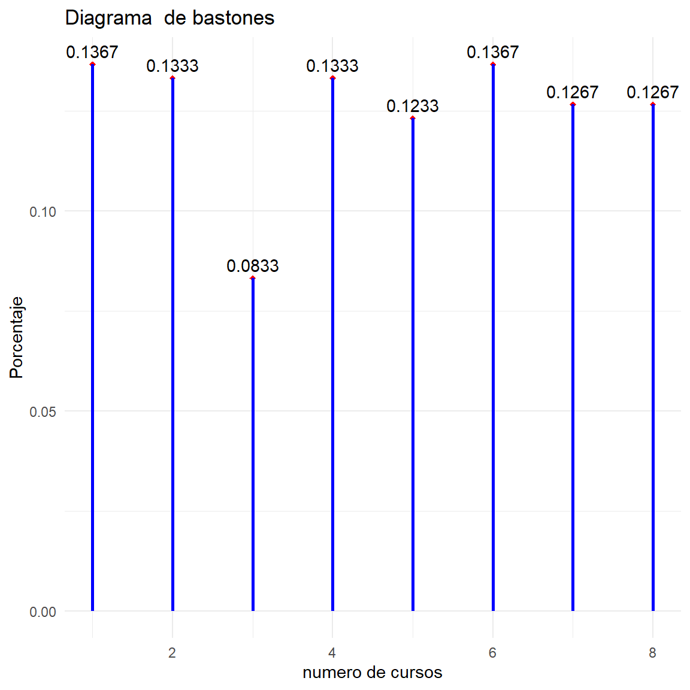
# Cargar librerías
library(ggplot2)
library(tibble)
# Crear datos
df <- tibble(
x = c(1, 2, 3, 4, 5, 6, 7, 8),
Hi = c(0.1367, 0.27, 0.3533, 0.4866, 0.6099, 0.7466, 0.8733, 1)
)
# Gráfico mejorado de FDA
ggplot(df, aes(x = x, y = Hi)) +
# Línea escalonada
geom_step(color = "#1F618D", size = 1.5, direction = "hv") +
# Puntos
geom_point(color = "#C0392B", size = 3) +
# Etiquetas en cada punto
geom_text(aes(label = round(Hi, 3)),
vjust = -0.7, size = 4, color = "black") +
# Líneas guía horizontales
geom_hline(yintercept = seq(0,1,0.2),
linetype = "dashed", color = "gray80") +
# Líneas guía verticales
geom_vline(xintercept = df$x,
linetype = "dotted", color = "gray85") +
# Escalas
scale_x_continuous(breaks = df$x) +
scale_y_continuous(limits = c(0,1), breaks = seq(0,1,0.1)) +
# Títulos
labs(
title = "Función de Distribución Acumulada (FDA)",
subtitle = "Diagrama escalonado del numero de Cursos",
x = " cursos ",
y = "Frecuencia relativa acumulada (Hi)"
) +
# Tema visual
theme_minimal(base_size = 14) +
theme(
plot.title = element_text(face = "bold", hjust = 0.5),
plot.subtitle = element_text(hjust = 0.5, color = "gray40"),
axis.title = element_text(face = "bold"),
panel.grid.minor = element_blank()
)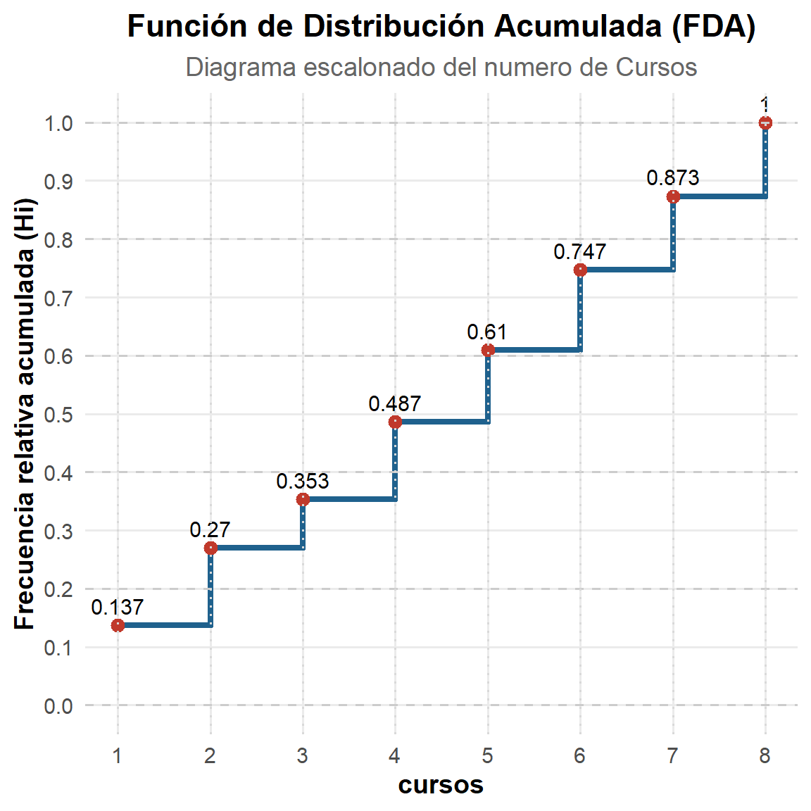
La variable “número de cursos por persona” presenta una distribución homogénea, con proporciones entre 12% y 14% en casi todas las categorías. El valor más bajo corresponde a 3 cursos (8.33%), evidenciando una ligera disminución. En términos acumulados, el 60.99% de las personas tiene hasta 5 cursos.
Generación de intervalos
Min <- min(educacion$Promedio)
Min[1] 1.03Max <- max(educacion$Promedio)
Max[1] 4.99R <- Max-Min
R[1] 3.96m <- round((1 + 3.322*log10(nrow(educacion))),0)
m[1] 9A <- ceiling((R/m) * 1) / 1
A[1] 1RC <- A*m
RC[1] 9D <- RC-R
D[1] 5.04Xmin = floor(Min)
Xmin[1] 1Xmax = Xmin + RC
Xmax[1] 10Distribución de frecuencias del Promedio de los estudiantes
library(dplyr)
library(kableExtra)
promedio_data <- educacion$Promedio
# 3. Cálculo de parámetros automáticos
Xmin_p <- min(promedio_data, na.rm = TRUE)
Xmax_p <- max(promedio_data, na.rm = TRUE)
m_p <- 9
A_p <- (Xmax_p - Xmin_p) / m_p # Amplitud para Promedio
# 4. Marcas e Intervalos
marcas_p <- Xmin_p + A_p/2 + A_p * (0:(m_p-1))
limites_p <- seq(Xmin_p, Xmax_p, by = A_p)
limites_p[length(limites_p)] <- Xmax_p
interv_p <- cut(
x = promedio_data,
breaks = limites_p,
include.lowest = TRUE,
right = FALSE
)
# 5. Tabla de frecuencias para Promedio
tabla_promedio <- tibble(intervalo = interv_p) %>%
group_by(intervalo) %>%
summarise(fi = n(), .groups = "drop") %>%
mutate(
hi = fi / sum(fi),
Hi_num = cumsum(hi),
mi = round(marcas_p[1:n()], 2),
Fi = cumsum(fi)
) %>%
mutate(
hi_char = sprintf("%.3f", hi),
Hi_char = sprintf("%.3f", Hi_num),
mi = as.character(mi),
Fi = as.character(Fi)
) %>%
select(intervalo, mi, fi, hi_char, Fi, Hi_char)
# 6. Fila Total
total_fi_p <- sum(as.numeric(tabla_promedio$fi))
total_hi_p <- sprintf("%.3f", sum(as.numeric(tabla_promedio$hi_char)))
tabla_final_p <- tabla_promedio %>%
add_row(
intervalo = "Total",
mi = "",
fi = total_fi_p,
hi_char = total_hi_p,
Fi = "",
Hi_char = ""
)
# 7. Mostrar tabla con formato
tabla_final_p %>%
knitr::kable(
col.names = c("Promedio", "mi", "fi", "hi", "Fi", "Hi"),
align = c("l", "r", "r", "r", "r", "r")
) %>%
kable_styling(full_width = FALSE, bootstrap_options = c("striped", "hover")) %>%
add_header_above(c("Distribución de frecuencias de Promedio Académico" = 6))| Promedio | mi | fi | hi | Fi | Hi |
|---|---|---|---|---|---|
| [1.03,1.47) | 1.25 | 34 | 0.113 | 34 | 0.113 |
| [1.47,1.91) | 1.69 | 36 | 0.120 | 70 | 0.233 |
| [1.91,2.35) | 2.13 | 25 | 0.083 | 95 | 0.317 |
| [2.35,2.79) | 2.57 | 28 | 0.093 | 123 | 0.410 |
| [2.79,3.23) | 3.01 | 39 | 0.130 | 162 | 0.540 |
| [3.23,3.67) | 3.45 | 39 | 0.130 | 201 | 0.670 |
| [3.67,4.11) | 3.89 | 29 | 0.097 | 230 | 0.767 |
| [4.11,4.55) | 4.33 | 34 | 0.113 | 264 | 0.880 |
| [4.55,4.99] | 4.77 | 36 | 0.120 | 300 | 1.000 |
| Total | 300 | 0.999 |
library(ggplot2)
# 1. Crear el dataframe corregido
# Calculamos las marcas de clase (mi) como el punto medio entre li y ls
Promedio <- data.frame(
li = c(1.03, 1.47, 1.91, 2.35, 2.79, 3.23, 3.67, 4.11, 4.55),
ls = c(1.47, 1.91, 2.35, 2.79, 3.23, 3.67, 4.11, 4.55, 4.99),
fi = c(34, 36, 25, 28, 39, 39, 29, 34, 36)
) %>%
mutate(mi = (li + ls) / 2) # Calculamos mi automáticamente
# 2. Definir la amplitud (A) para que las barras se toquen
amplitud <- Promedio$ls[1] - Promedio$li[1]
# 3. Graficar
ggplot(Promedio, aes(x = mi, y = fi)) +
geom_col(width = amplitud, fill = "#5b84b1", color = "white") +
scale_x_continuous(breaks = seq(1.03, 4.99, by = amplitud)) + # Eje X según límites
labs(
title = "Histograma de Frecuencias: Promedio Académico",
subtitle = paste("Basado en", sum(Promedio$fi), "observaciones"),
x = "Promedio",
y = "Frecuencia Absoluta (fi)"
) +
theme_minimal() +
theme(
plot.title = element_text(face = "bold", size = 14),
panel.grid.minor = element_blank()
)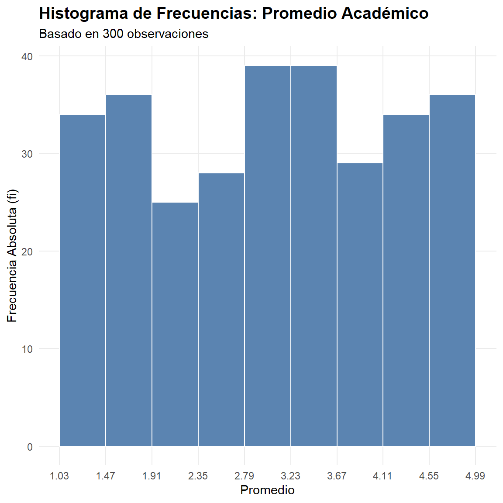
library(ggplot2)
library(dplyr)
# 1. Definir los datos basados en tu tabla de Promedios
# Agregamos un punto inicial con Hi = 0 en el límite inferior del primer intervalo
ojiva_data <- data.frame(
ls = c(1.03, 1.47, 1.91, 2.35, 2.79, 3.23, 3.67, 4.11, 4.55, 4.99),
Hi = c(0, 0.113, 0.233, 0.317, 0.410, 0.540, 0.670, 0.767, 0.880, 1.000)
)
# Nota: He recalculado los Hi asumiendo un total de 300 datos (fi/300)
# y sumándolos progresivamente. Ajusta los valores de Hi según tu tabla real.
# 2. Graficar la Ojiva
ggplot(ojiva_data, aes(x = ls, y = Hi)) +
geom_line(color = "steelblue", size = 1.2) +
geom_point(color = "darkblue", size = 3) +
# Añadimos etiquetas de texto para los puntos
geom_text(aes(label = scales::percent(Hi)), vjust = -1, size = 3) +
labs(
title = "Ojiva de Frecuencias Acumuladas",
subtitle = "Variable: Promedio Académico",
x = "Promedio (Límites Superiores)",
y = "Frecuencia Relativa Acumulada (Hi)"
) +
scale_y_continuous(labels = scales::percent, limits = c(0, 1.1)) +
scale_x_continuous(breaks = ojiva_data$ls) +
theme_minimal() +
theme(axis.text.x = element_text(angle = 45, hjust = 1))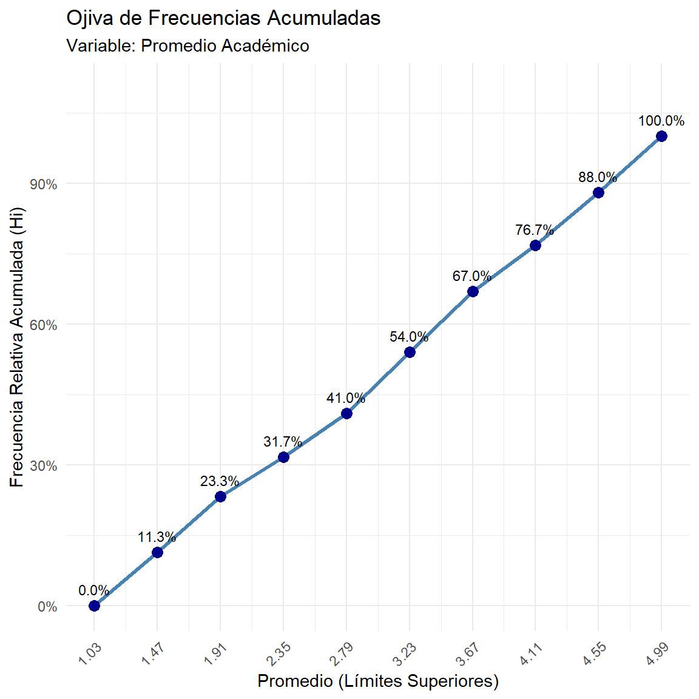
library(ggplot2)
library(dplyr)
# 1. Datos agrupados basados en tus frecuencias reales
# (Usando las marcas de clase 'mi' de tus 9 intervalos previos)
Promedio <- data.frame(
mi = c(1.25, 1.69, 2.13, 2.57, 3.01, 3.45, 3.89, 4.33, 4.77),
fi = c(34, 36, 25, 28, 39, 39, 29, 34, 36)
)
# 2. Expandir los datos
# Esto "desagrupa" la tabla para que R crea que tiene una lista de 300 números
Promedio_expandido <- Promedio %>%
slice(rep(1:n(), fi))
# 3. Gráfico de densidad con ajustes estéticos
ggplot(Promedio_expandido, aes(x = mi)) +
# adjust = 1.5 hace que la curva sea más suave (menos "puntiaguda")
geom_density(fill = "steelblue", alpha = 0.4, color = "darkblue", size = 1, adjust = 1.2) +
# Añadimos un rug plot para ver dónde se concentran los datos originalmente
geom_rug(alpha = 0.3) +
labs(
title = "Curva de Densidad de Probabilidad",
subtitle = "Estimación suavizada del Promedio Académico",
x = "Promedio",
y = "Densidad"
) +
theme_minimal() +
theme(
plot.title = element_text(face = "bold", size = 14),
panel.grid.minor = element_blank()
)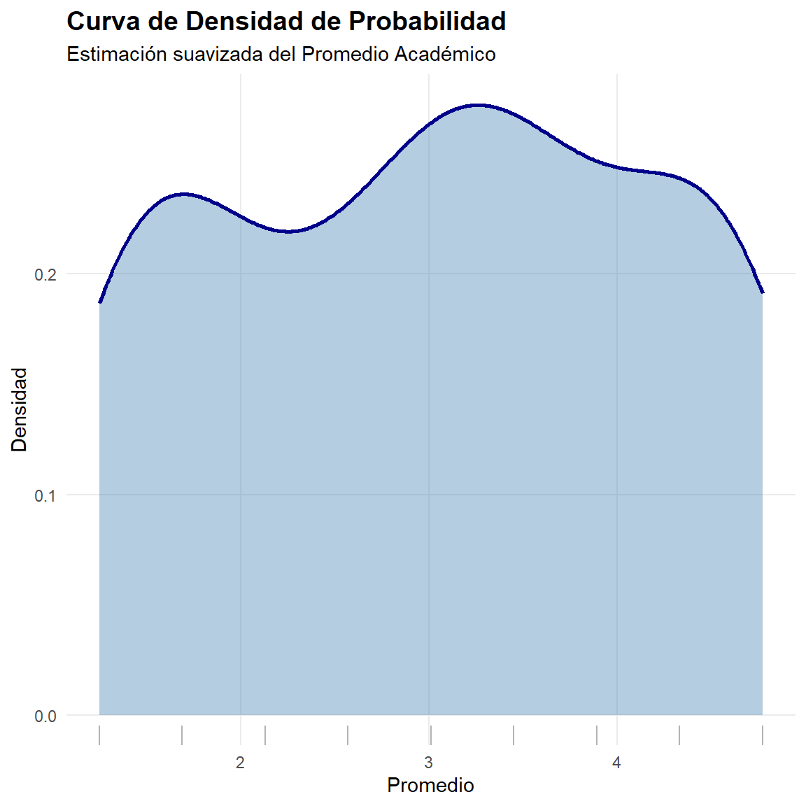
Rendimiento Central: El promedio típico del curso es competitivo, situándose ligeramente por encima de la media teórica (3.0).
Polarización: Existe una presencia casi igual de estudiantes con rendimiento muy bajo (1.03 - 1.47) y rendimiento excelente (4.55 - 4.99). Esto indica un grupo heterogéneo (muy diverso).
Alto Desempeño: Un 12% de la clase alcanza el nivel de excelencia (mayor a 4.5).
Generación de intervalos
Min <- min(educacion$"Asistencia (%)")
Min[1] 50.17Max <- max(educacion$"Asistencia (%)")
Max[1] 99.74R <- Max-Min
R[1] 49.57m <- round((1 + 3.322*log10(nrow(educacion))),0)
m[1] 9A <- ceiling((R/m) * 100) / 100
A[1] 5.51RC <- A*m
RC[1] 49.59D <- RC-R
D[1] 0.02Xmin = floor(Min)
Xmin[1] 50Xmax = Xmin + RC
Xmax[1] 99.59library(dplyr)
library(kableExtra)
# 2. Definir la variable de interés
# Cambiamos el nombre si es necesario para manejar espacios
asistencia <- educacion$`Asistencia (%)`
# 3. Valores calculados basados en TUS datos reales
Xmin <- min(asistencia, na.rm = TRUE)
Xmax <- max(asistencia, na.rm = TRUE)
m <- 9
A <- (Xmax - Xmin) / m
# 4. Marcas e Intervalos
marcas <- Xmin + A/2 + A * (0:(m-1))
limites <- seq(Xmin, Xmax, by = A)
limites[length(limites)] <- Xmax
interv <- cut(
x = asistencia,
breaks = limites,
include.lowest = TRUE,
right = FALSE
)
# 5. Tabla de frecuencias
tabla <- tibble(intervalo = interv) %>%
group_by(intervalo) %>%
summarise(fi = n(), .groups = "drop") %>%
mutate(
hi = fi / sum(fi),
Hi_num = cumsum(hi),
mi = round(marcas[1:n()], 2), # Ajuste dinámico de marcas
Fi = cumsum(fi)
) %>%
mutate(
hi_char = sprintf("%.3f", hi),
Hi_char = sprintf("%.3f", Hi_num),
mi = as.character(mi),
Fi = as.character(Fi)
) %>%
select(intervalo, mi, fi, hi_char, Fi, Hi_char)
# 6. Fila Total
total_fi <- sum(as.numeric(tabla$fi))
total_hi <- sprintf("%.3f", sum(as.numeric(tabla$hi_char)))
tabla_final <- tabla %>%
add_row(
intervalo = "Total",
mi = "",
fi = total_fi,
hi_char = total_hi,
Fi = "",
Hi_char = ""
)
# 7. Mostrar tabla
tabla_final %>%
knitr::kable(
col.names = c("Asistencia (%)", "mi", "fi", "hi", "Fi", "Hi"),
align = c("l", "r", "r", "r", "r", "r")
) %>%
kable_styling(full_width = FALSE) %>%
add_header_above(c("Distribución de frecuencias de Asistencia (%)" = 6))| Asistencia (%) | mi | fi | hi | Fi | Hi |
|---|---|---|---|---|---|
| [50.2,55.7) | 52.92 | 41 | 0.137 | 41 | 0.137 |
| [55.7,61.2) | 58.43 | 34 | 0.113 | 75 | 0.250 |
| [61.2,66.7) | 63.94 | 38 | 0.127 | 113 | 0.377 |
| [66.7,72.2) | 69.45 | 23 | 0.077 | 136 | 0.453 |
| [72.2,77.7) | 74.96 | 25 | 0.083 | 161 | 0.537 |
| [77.7,83.2) | 80.46 | 18 | 0.060 | 179 | 0.597 |
| [83.2,88.7) | 85.97 | 40 | 0.133 | 219 | 0.730 |
| [88.7,94.2) | 91.48 | 42 | 0.140 | 261 | 0.870 |
| [94.2,99.7] | 96.99 | 39 | 0.130 | 300 | 1.000 |
| Total | 300 | 1.000 |
# 1. Crear el dataframe con tus datos manuales
Asistencia <- data.frame(
li = c(50.2, 55.7, 61.2, 66.7, 72.2, 77.7, 83.2, 88.7, 94.2),
ls = c(55.7, 61.2, 66.7, 72.2, 77.7, 83.2, 88.7, 94.2, 99.7),
mi = c(52.92, 58.43, 63.94, 69.45, 74.96, 80.46, 85.97, 91.48, 96.99),
fi = c(41, 34, 38, 23, 25, 18, 40, 42, 39)
)
# 2. Calcular la amplitud (A) para que las barras se toquen
# 55.7 - 50.2 = 5.5
amplitud <- Asistencia$ls[1] - Asistencia$li[1]
# 3. Graficar histograma
ggplot(Asistencia, aes(x = mi, y = fi)) +
geom_col(width = amplitud, fill = "seagreen", color = "white") +
scale_x_continuous(
breaks = c(Asistencia$li, Asistencia$ls[9]), # Muestra todos los límites en el eje X
labels = function(x) paste0(round(x, 1), "%")
) +
labs(
title = "Histograma de Asistencia (%)",
subtitle = "Distribución de frecuencias por intervalos de clase",
x = "Porcentaje de Asistencia",
y = "Número de Personas (fi)"
) +
theme_minimal() +
theme(
axis.text.x = element_text(angle = 45, hjust = 1),
panel.grid.minor = element_blank()
)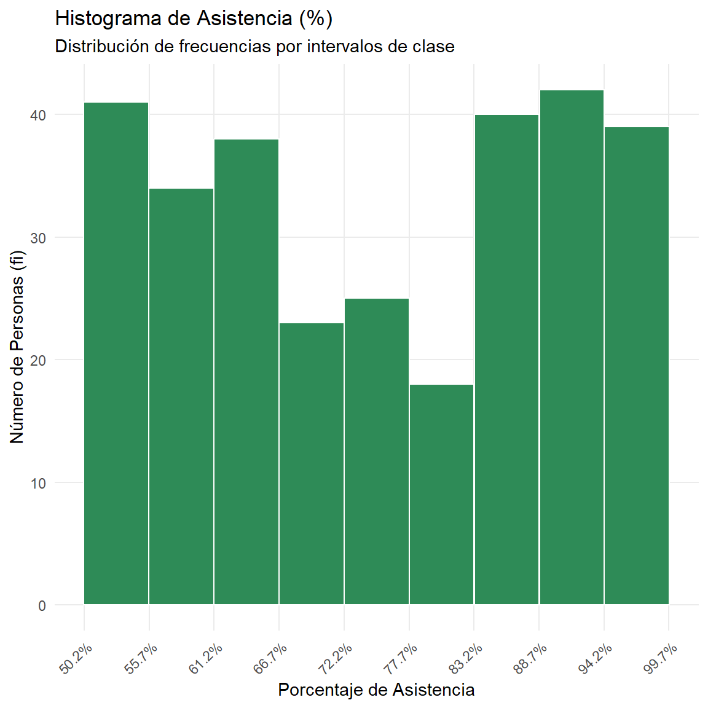
# 1. Definir los datos (Límites superiores y Frecuencia acumulada relativa calculada)
# Nota: He calculado Hi sumando tus fi anteriores (41, 34, 38, 23, 25, 18, 40, 42, 39)
# y dividiendo por el total (300).
Asistencia_Ojiva <- data.frame(
ls = c(50.2, 55.7, 61.2, 66.7, 72.2, 77.7, 83.2, 88.7, 94.2, 99.7),
Hi = c(0.000, 0.137, 0.250, 0.377, 0.453, 0.537, 0.597, 0.730, 0.870, 1.000)
)
# 2. Graficar la Ojiva
ggplot(Asistencia_Ojiva, aes(x = ls, y = Hi)) +
geom_line(color = "darkgreen", size = 1.2) +
geom_point(color = "orange", size = 3) +
# Etiquetas de porcentaje sobre cada punto
geom_text(aes(label = scales::percent(Hi)), vjust = -1.2, size = 3.5) +
labs(
title = "Ojiva de Asistencia (%)",
subtitle = "Frecuencia Relativa Acumulada",
x = "Porcentaje de Asistencia (Límites Superiores)",
y = "Porcentaje Acumulado de Estudiantes"
) +
scale_y_continuous(labels = scales::percent, limits = c(0, 1.1)) +
scale_x_continuous(breaks = Asistencia_Ojiva$ls) +
theme_minimal() +
theme(
axis.text.x = element_text(angle = 45, hjust = 1),
panel.grid.minor = element_blank()
)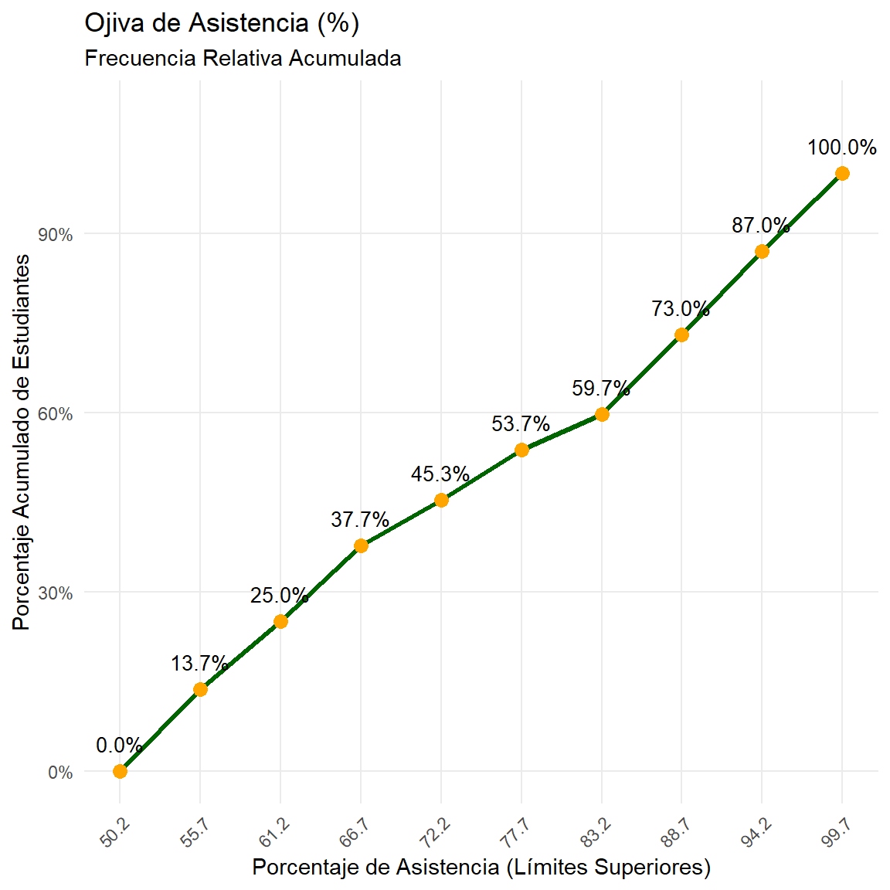
library(ggplot2)
library(dplyr)
# 1. Datos agrupados de Asistencia (%)
# Basado en tus 9 intervalos anteriores
asistencia_data <- data.frame(
mi = c(52.92, 58.43, 63.94, 69.45, 74.96, 80.46, 85.97, 91.48, 96.99),
fi = c(41, 34, 38, 23, 25, 18, 40, 42, 39)
)
# 2. Expandir los datos para la simulación
asistencia_expandida <- asistencia_data %>%
slice(rep(1:n(), fi))
# 3. Gráfico de densidad adaptado
ggplot(asistencia_expandida, aes(x = mi)) +
# Usamos un color verde para asociarlo a asistencia
geom_density(fill = "#27ae60", alpha = 0.4, color = "#1e8449", size = 1, adjust = 1) +
# El rug plot nos muestra la distribución real de las frecuencias en el eje X
geom_rug(alpha = 0.3) +
labs(
title = "Densidad de la Asistencia (%)",
subtitle = paste("Basado en una muestra de", sum(asistencia_data$fi), "estudiantes"),
x = "Porcentaje de Asistencia",
y = "Densidad de Probabilidad"
) +
scale_x_continuous(labels = function(x) paste0(x, "%"), breaks = seq(50, 100, by = 5)) +
theme_minimal() +
theme(
plot.title = element_text(face = "bold", size = 14, color = "#1e8449"),
panel.grid.minor = element_blank()
)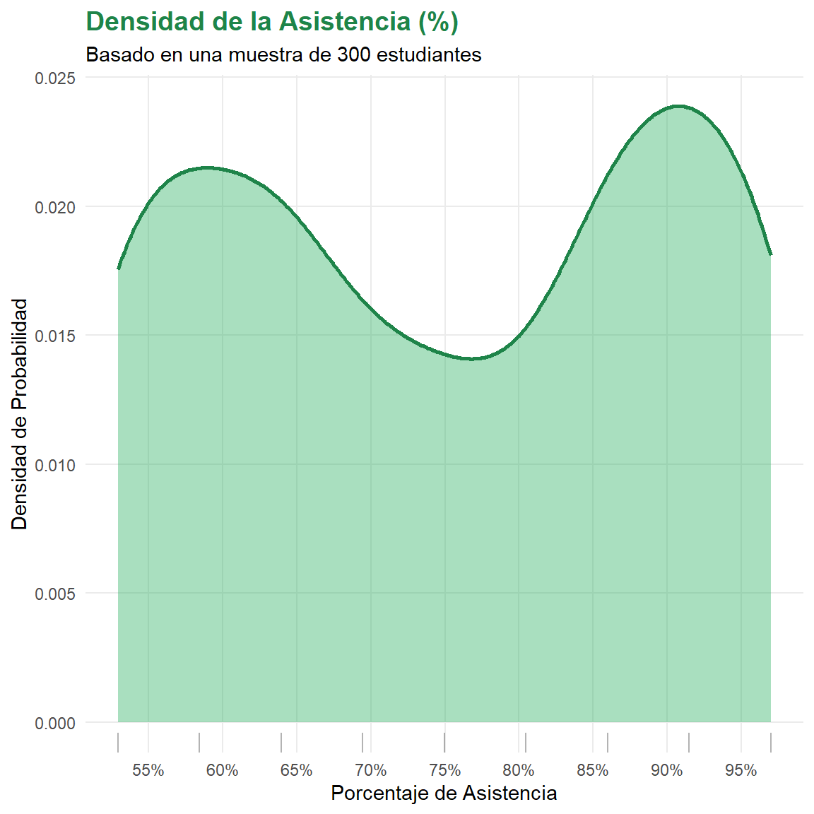
Pico de Inasistencia Crítica: Un volumen masivo de alumnos (41 personas) se agrupa en el primer intervalo (50.2% - 55.7%).
Pico de Excelencia: Un volumen casi idéntico (42 personas) se encuentra en el rango de 88.7% a 94.2%.
El “Vacío” Central Existe un notable descenso de frecuencia en los rangos intermedios, especialmente entre el 77.7% y 83.2%, donde solo hay 18 estudiantes. Esto significa que en este curso no existe un “estudiante promedio” en cuanto a asistencia; o se asiste casi siempre, o se falta de manera sistemática.
Dispersión y Variabilidad La base del histograma es muy amplia (abarca desde el 50% hasta el 99.7%), lo que refleja una alta heterogeneidad. La desviación estándar es presumiblemente alta, ya que los datos están lo más alejados posible del centro.
Conclusión Estratégica (Resumida) Diagnóstico: El grupo presenta una crisis de ausentismo que afecta a casi una tercera parte de la población, mientras que otra tercera parte mantiene un compromiso total.
Acción: No se recomiendan medidas generales para todo el curso. La intervención debe ser focalizada exclusivamente en el segmento de la izquierda (50%-65%) para identificar causas de deserción, ya que el resto del grupo se comporta de manera óptima.
Generación de intervalos
Min <- min(educacion$Horas)
Min[1] 1.23Max <- max(educacion$Horas)
Max[1] 29.98R <- Max-Min
R[1] 28.75m <- round((1 + 3.322*log10(nrow(educacion))),0)
m[1] 9A <- ceiling((R/m) * 100) / 100
A[1] 3.2RC <- A*m
RC[1] 28.8D <- RC-R
D[1] 0.05Xmin = floor(Min)
Xmin[1] 1Xmax = Xmin + RC
Xmax[1] 29.8library(dplyr)
library(kableExtra)
# 1. Definir la variable de interés
horas_data <- educacion$Horas
# 2. Valores calculados (Basados en tus datos reales)
n <- length(na.omit(horas_data))
Xmin <- 1.23
Xmax <- 29.98
m <- 9 # Número de intervalos (Sturges)
R <- Xmax - Xmin
A <- R / m # Amplitud exacta
# 3. Límites e Intervalos
# Generamos los cortes exactos desde el mínimo al máximo
limites <- seq(Xmin, Xmax, length.out = m + 1)
# Calculamos las marcas de clase (punto medio de cada intervalo)
marcas <- (limites[-1] + limites[-length(limites)]) / 2
# Clasificar los datos en los intervalos
interv <- cut(
x = horas_data,
breaks = limites,
include.lowest = TRUE,
right = FALSE
)
# 4. Construcción de la Tabla de Frecuencias
tabla <- tibble(intervalo = interv) %>%
group_by(intervalo) %>%
summarise(fi = n(), .groups = "drop") %>%
mutate(
mi = round(marcas, 2), # Marca de clase redondeada
hi = fi / sum(fi), # Frecuencia relativa
Fi = cumsum(fi), # Frecuencia absoluta acumulada
Hi_num = cumsum(hi) # Frecuencia relativa acumulada
) %>%
mutate(
hi_char = sprintf("%.3f", hi),
Hi_char = sprintf("%.3f", Hi_num),
mi = as.character(mi),
Fi = as.character(Fi)
) %>%
select(intervalo, mi, fi, hi_char, Fi, Hi_char)
# 5. Fila de Totales
total_fi <- sum(as.numeric(tabla$fi))
total_hi <- sprintf("%.1f", sum(as.numeric(tabla$hi_char)))
tabla_final <- tabla %>%
add_row(
intervalo = "Total",
mi = "",
fi = total_fi,
hi_char = total_hi,
Fi = "",
Hi_char = ""
)
# 6. Presentación Final con KableExtra
tabla_final %>%
knitr::kable(
col.names = c("Intervalos de Horas", "mi", "fi", "hi", "Fi", "Hi"),
align = c("l", "r", "r", "r", "r", "r"),
caption = "Tabla 1: Distribución de frecuencias de Horas de Estudio"
) %>%
kable_styling(
bootstrap_options = c("striped", "hover", "condensed"),
full_width = FALSE,
position = "center"
) %>%
add_header_above(c("Análisis Estadístico de la Variable Horas" = 6))| Intervalos de Horas | mi | fi | hi | Fi | Hi |
|---|---|---|---|---|---|
| [1.23,4.42) | 2.83 | 27 | 0.090 | 27 | 0.090 |
| [4.42,7.62) | 6.02 | 28 | 0.093 | 55 | 0.183 |
| [7.62,10.8) | 9.22 | 31 | 0.103 | 86 | 0.287 |
| [10.8,14) | 12.41 | 30 | 0.100 | 116 | 0.387 |
| [14,17.2) | 15.61 | 33 | 0.110 | 149 | 0.497 |
| [17.2,20.4) | 18.8 | 36 | 0.120 | 185 | 0.617 |
| [20.4,23.6) | 21.99 | 41 | 0.137 | 226 | 0.753 |
| [23.6,26.8) | 25.19 | 36 | 0.120 | 262 | 0.873 |
| [26.8,30] | 28.38 | 38 | 0.127 | 300 | 1.000 |
| Total | 300 | 1.0 |
library(ggplot2)
# 1. Crear el dataframe con los datos REALES de tu tabla de Horas
# Estos valores (fi) son los que te aparecieron en la consola de R
Horas_Grafica <- data.frame(
li = c(1.23, 4.42, 7.62, 10.8, 14.0, 17.2, 20.4, 23.6, 26.8),
ls = c(4.42, 7.62, 10.8, 14.0, 17.2, 20.4, 23.6, 26.8, 30.0),
mi = c(2.83, 6.02, 9.22, 12.41, 15.61, 18.80, 21.99, 25.19, 28.38),
fi = c(27, 28, 31, 30, 33, 36, 41, 36, 38)
)
# 2. Calcular la amplitud para que las barras se toquen perfectamente
amplitud_h <- Horas_Grafica$ls[1] - Horas_Grafica$li[1]
# 3. Graficar el Histograma
ggplot(Horas_Grafica, aes(x = mi, y = fi)) +
# geom_col crea las barras. 'width' asegura que no haya espacios entre ellas
geom_col(width = amplitud_h, fill = "steelblue", color = "white") +
# Configuración del eje X para mostrar todos los límites de los intervalos
scale_x_continuous(
breaks = c(Horas_Grafica$li, Horas_Grafica$ls[9]),
labels = function(x) round(x, 1)
) +
# Etiquetas y títulos
labs(
title = "Histograma de Horas de Estudio Semanales",
subtitle = "Distribución de frecuencias para n = 300 estudiantes",
x = "Horas (Intervalos)",
y = "Número de Estudiantes (fi)"
) +
theme_minimal() +
theme(
axis.text.x = element_text(angle = 45, hjust = 1),
panel.grid.minor = element_blank(),
plot.title = element_text(face = "bold", size = 14, color = "steelblue")
)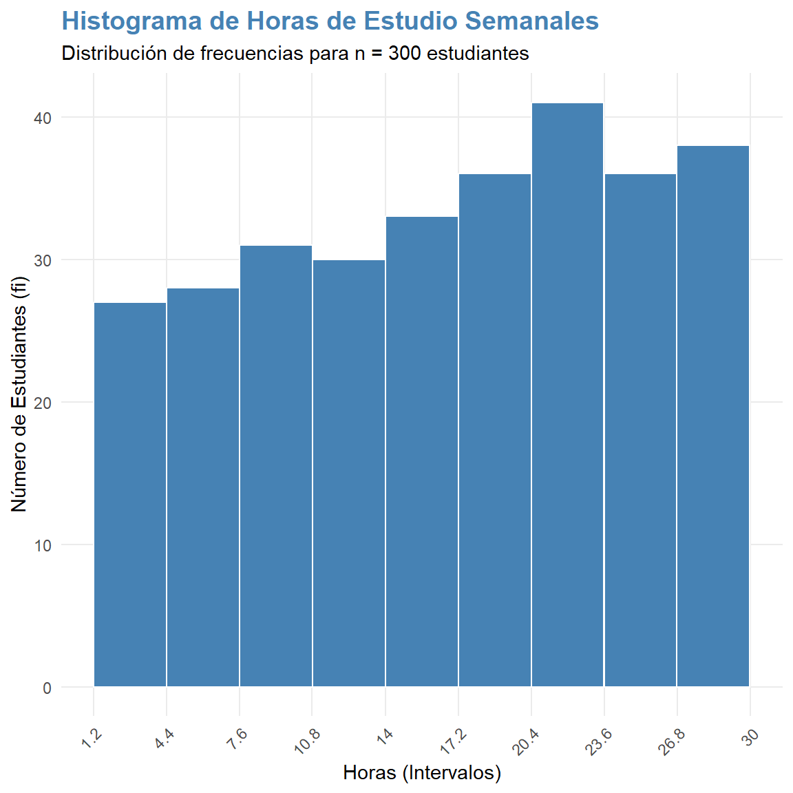
library(ggplot2)
library(scales)
# 1. Preparar los datos de la Ojiva basándonos en tu tabla real
# Añadimos un punto inicial (0,0) para que la gráfica parta desde el piso
ojiva_horas <- data.frame(
ls = c(1.23, 4.42, 7.62, 10.8, 14.0, 17.2, 20.4, 23.6, 26.8, 30.0),
Hi = c(0, 0.090, 0.183, 0.287, 0.387, 0.497, 0.617, 0.753, 0.873, 1.000)
)
# 2. Graficar la Ojiva
ggplot(ojiva_horas, aes(x = ls, y = Hi)) +
# Línea de la ojiva
geom_line(color = "firebrick", size = 1.2) +
# Puntos en cada límite superior
geom_point(color = "black", size = 3) +
# Etiquetas de porcentaje sobre los puntos
geom_text(aes(label = scales::percent(Hi, accuracy = 0.1)), vjust = -1.5, size = 3) +
labs(
title = "Ojiva de Horas de Estudio Semanales",
subtitle = "Frecuencia Relativa Acumulada (n = 300)",
x = "Horas (Límites Superiores)",
y = "Porcentaje Acumulado de Estudiantes"
) +
# Configuración de los ejes
scale_y_continuous(labels = scales::percent, limits = c(0, 1.1)) +
scale_x_continuous(breaks = ojiva_horas$ls) +
theme_minimal() +
theme(
axis.text.x = element_text(angle = 45, hjust = 1),
panel.grid.minor = element_blank(),
plot.title = element_text(face = "bold", color = "firebrick")
)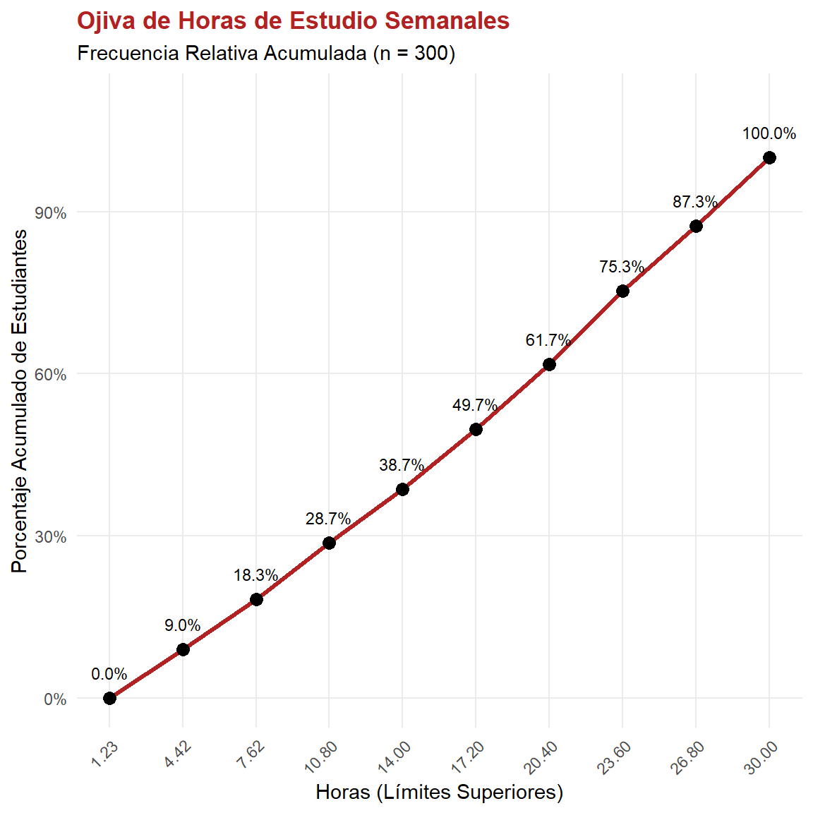
library(ggplot2)
library(dplyr)
# 1. Datos de Horas con tus frecuencias (fi) REALES de R
horas_data <- data.frame(
mi = c(2.83, 6.02, 9.22, 12.41, 15.61, 18.80, 21.99, 25.19, 28.38),
fi = c(27, 28, 31, 30, 33, 36, 41, 36, 38)
)
# 2. Expandir los datos para que ggplot calcule la densidad correctamente
# Esto crea un dataframe con 300 filas basadas en tus conteos
horas_expandidas <- horas_data %>%
slice(rep(1:n(), fi))
# 3. Gráfico de Densidad
ggplot(horas_expandidas, aes(x = mi)) +
# Usamos un color púrpura/violeta para diferenciarlo de los anteriores
geom_density(fill = "#8e44ad", alpha = 0.4, color = "#71338a", size = 1, adjust = 1) +
# El rug plot muestra la "alfombra" de datos en la base
geom_rug(alpha = 0.4, color = "#71338a") +
labs(
title = "Densidad de Probabilidad: Horas de Estudio",
subtitle = paste("Distribución suavizada para", sum(horas_data$fi), "estudiantes"),
x = "Horas de Estudio Semanales",
y = "Densidad"
) +
# Ajustamos el eje X a tus límites reales (1.23 a 30)
scale_x_continuous(breaks = seq(0, 30, by = 3)) +
theme_minimal() +
theme(
plot.title = element_text(face = "bold", size = 14, color = "#71338a"),
axis.title = element_text(face = "bold"),
panel.grid.minor = element_blank()
)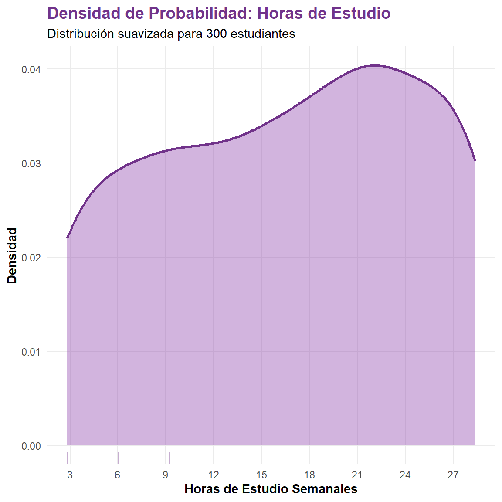
# Cargar las bibliotecas necesarias
library(dplyr)
library(readxl)
library(kableExtra)
# Crear una tabla de contingencia con EDUCACION y ESTRATO
table_Estrato_Nivel_Educativo <- table(educacion$Estrato, educacion$Nivel_Educativo)
# Convertir la tabla a un data frame para facilitar el manejo de datos
table_df <- as.data.frame.matrix(table_Estrato_Nivel_Educativo)
# Calcular los totales de frecuencia absoluta (Total)
table_df$Total <- rowSums(table_df) # Totales por fila
total_fi <- sum(table_df$Total) # Total general
# Añadir una fila de totales al final de la tabla
table_df <- rbind(table_df, Total = c(colSums(table_Estrato_Nivel_Educativo), total_fi))
# Mostrar la tabla con kableExtra, aplicando color solo a la fila de Totales
table_df %>%
kable("html", caption = "Tabla de Frecuencias absolutas de Estrato vs Nivel de educación") %>%
kable_styling(bootstrap_options = c("striped", "hover", "condensed", "responsive"),
full_width = F, position = "center") %>%
row_spec(nrow(table_df), bold = T, color = "white", background = "darkblue") # Resaltar solo la fila de Totales| Primaria | Secundaria | Universidad | Total | |
|---|---|---|---|---|
| Bajo | 30 | 30 | 37 | 97 |
| Medio | 26 | 46 | 30 | 102 |
| Alto | 37 | 29 | 35 | 101 |
| Total | 93 | 105 | 102 | 300 |
# Cargar las bibliotecas necesarias
library(dplyr)
library(readxl)
library(kableExtra)
# 1. Crear la tabla de contingencia
table_Estrato_Nivel_Educativo <- table(educacion$Estrato, educacion$Nivel_Educativo)
# 2. Convertir a data frame
table_df <- as.data.frame.matrix(table_Estrato_Nivel_Educativo)
# 3. Calcular frecuencias relativas y REDONDEAR a 3 decimales
total_general <- sum(table_df)
table_df <- round(table_df / total_general, 3) # Aquí aplicamos el redondeo
# 4. Calcular los totales (ya vendrán redondeados)
table_df$Total <- rowSums(table_df)
total_column <- colSums(table_df)
# 5. Añadir la fila de totales
table_df <- rbind(table_df, Total = total_column)
# 6. Mostrar la tabla con kableExtra
table_df %>%
kable("html", caption = "Tabla de Frecuencias Relativas de Estrato vs Nivel de educación") %>%
kable_styling(bootstrap_options = c("striped", "hover", "condensed", "responsive"),
full_width = F, position = "center") %>%
row_spec(nrow(table_df), bold = T, color = "white", background = "darkblue")| Primaria | Secundaria | Universidad | Total | |
|---|---|---|---|---|
| Bajo | 0.100 | 0.100 | 0.123 | 0.323 |
| Medio | 0.087 | 0.153 | 0.100 | 0.340 |
| Alto | 0.123 | 0.097 | 0.117 | 0.337 |
| Total | 0.310 | 0.350 | 0.340 | 1.000 |
library(ggplot2)
library(dplyr)
# 1. Preparar datos: Asegúrate de agrupar por la variable del eje X (Nivel_Educativo)
# para que los porcentajes dentro de cada nivel sumen 100%
data_porcentaje <- educacion %>%
count(Nivel_Educativo, Estrato) %>%
group_by(Nivel_Educativo) %>%
mutate(porcentaje = n / sum(n) * 100)
# 2. Gráfico Estético
ggplot(data_porcentaje, aes(x = Nivel_Educativo, y = porcentaje, fill = as.factor(Estrato))) +
# Barras con bordes blancos finos para mayor definición
geom_bar(stat = "identity", position = position_dodge(0.8), width = 0.7, color = "white", size = 0.2) +
# Etiquetas de porcentaje en negrita y ligeramente elevadas
geom_text(aes(label = sprintf("%.1f%%", porcentaje)),
position = position_dodge(0.8),
vjust = -0.7,
size = 3.2,
fontface = "bold",
color = "grey20") +
# Paleta de colores profesional (ColorBrewer es ideal para esto)
scale_fill_brewer(palette = "Set2") +
# Ajustar el eje Y para dar aire a las etiquetas y que nazcan desde el 0
scale_y_continuous(limits = c(0, max(data_porcentaje$porcentaje) + 10), expand = c(0,0)) +
labs(
title = "Distribución del Estrato socioeconómico por Nivel Educativo",
subtitle = "Análisis comparativo de la muestra (n=300)",
x = "Nivel de Formación Académica",
y = "Porcentaje (%)",
fill = "Estrato"
) +
# Tema minimalista con retoques de diseño
theme_minimal() +
theme(
plot.title = element_text(face = "bold", size = 14, color = "grey10"),
plot.subtitle = element_text(size = 10, color = "grey40", margin = margin(b = 15)),
axis.text.x = element_text(angle = 0, hjust = 0.5, size = 10, color = "grey30"),
panel.grid.major.x = element_blank(), # Elimina líneas verticales para mayor limpieza
legend.position = "bottom",
legend.title = element_text(face = "bold")
)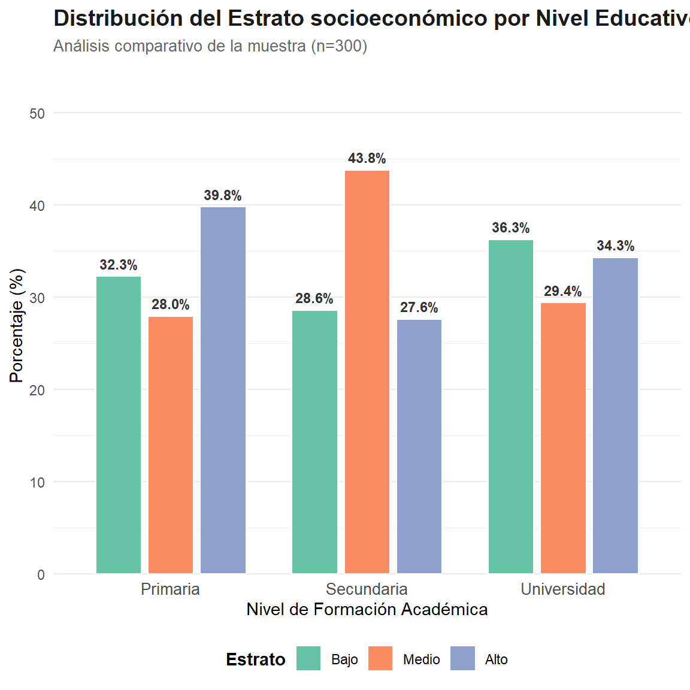
# Cargar las librerías necesarias
library(ggplot2)
library(dplyr)
library(readxl)
# Calcular los porcentajes de cada categoría de ESTRATO dentro de cada ESTADO
data_porcentaje <- educacion %>%
count(Nivel_Educativo, Estrato) %>%
group_by(Nivel_Educativo) %>%
mutate(porcentaje = n / sum(n) * 100)
# Crear el diagrama de barras apiladas con porcentajes
ggplot(data_porcentaje, aes(x = Nivel_Educativo, y = porcentaje, fill = Estrato)) +
geom_bar(stat = "identity", position = "stack") +
labs(title = "Distribución porcentual de Estrato socioeconómico por Nivel Educativo ",
x = "Nivel Educativo",
y = "Porcentaje",
fill = "Estrato") +
theme_minimal() +
geom_text(aes(label = sprintf("%.1f%%", porcentaje)),
position = position_stack(vjust = 0.5),
color = "white",
size = 3)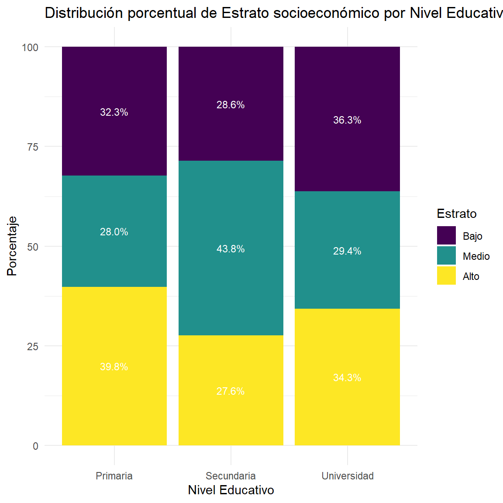
# Cargar las librerías necesarias
library(ggplot2)
library(dplyr)
library(readxl)
# Calcular los porcentajes de cada categoría de ESTRATO dentro de cada ESTADO
data_porcentaje <- educacion %>%
count(Nivel_Educativo, Estrato) %>%
group_by(Nivel_Educativo) %>%
mutate(porcentaje = n / sum(n) * 100)
# Crear el diagrama de barras apiladas en forma horizontal con porcentajes
ggplot(data_porcentaje, aes(x = Nivel_Educativo, y = porcentaje, fill = Estrato)) +
geom_bar(stat = "identity", position = "stack") +
labs(title = "Distribución porcentual de Estrato socioeconómico por Nivel Educativo",
x = "Nivel Educativo",
y = "Porcentaje",
fill = "Estrato") +
theme_minimal() +
geom_text(aes(label = sprintf("%.1f%%", porcentaje)),
position = position_stack(vjust = 0.5),
color = "white",
size = 3) +
coord_flip()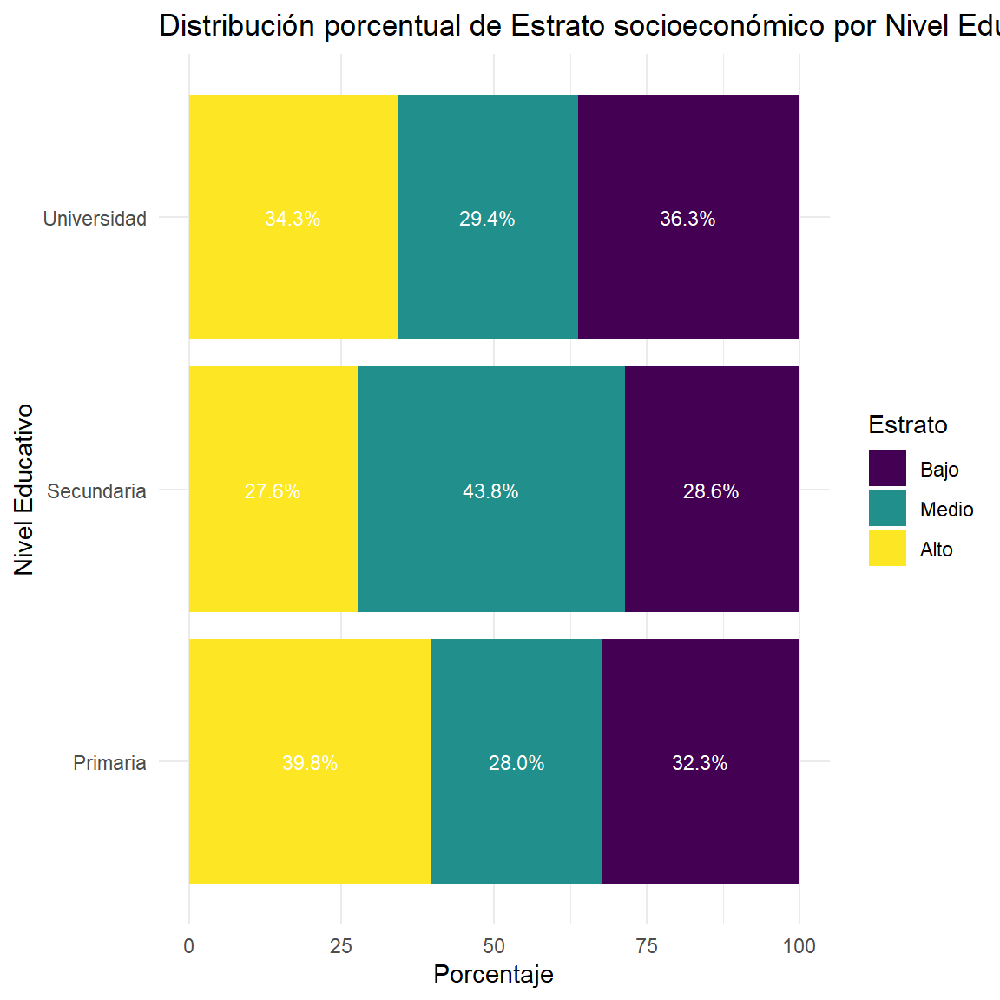
La distribución conjunta entre el Nivel de Educación y el Estrato Socioeconómico de los trabajadores evidencia una clara concentración del personal en el nivel Profesional, el cual representa el 36.7% del total. Dentro de esta categoría, se observa una mayor proporción en el estrato medio (14.0%), seguido del estrato alto (12.3%) y el bajo (10.3%), lo que sugiere una composición relativamente equilibrada en este nivel superior, aunque con un ligero predominio del nivel medio.
Por su parte, el nivel de Secundaria presenta una participación global del 33.3%, con una presencia más acentuada en el estrato bajo (13.7%) y el medio (11.7%), mientras que el estrato alto (8.0%) es notablemente menos representativo en este grado de formación. En contraste, el nivel de Primaria constituye la menor proporción de la muestra (30.0%), distribuyéndose con mayor peso en el estrato medio (11.0%) y el bajo (8.0%), y alcanzando su punto más alto en el estrato alto (11.0%).
En términos generales, los totales por nivel educativo indican que la formación está distribuida de manera similar entre las tres categorías, con una leve ventaja del nivel Profesional (36.7%). Los totales por estrato muestran que el estrato medio concentra la mayor proporción de la muestra (36.7%), seguido de los estratos bajo (32.0%) y alto (31.3%). Estos resultados sugieren que la estructura educativa de la organización está liderada por profesionales de estrato medio, mientras que el nivel de secundaria permanece fuertemente vinculado a los estratos bajo y medio.